進度 0%
Ch12 — 變分模型（Variational Models / Variational Autoencoder）
從潛在變數、變分推論、ELBO 到 VAE 與 reparameterization trick
示意圖解（inline SVG）。
本章談一個核心問題：資料背後有沒有「看不見的因子」在操控可觀察的現象？如果有，深度學習怎麼學出來？
原文用一個生動例子：你觀察到「穿鞋睡覺的人早上頭痛」。直覺說「穿鞋造成頭痛」，但觀察到「穿鞋的人都是酒醉」——真正原因是酒醉（latent variable），穿鞋只是共現。藥物研發、因果推論裡到處是這種陷阱。
機器學習的設定：給 $n$ 筆資料 $\{\boldsymbol{x}_i\}_{i=1}^n$，每筆 $\boldsymbol{x}_i\in\mathbb{R}^d$ 是可觀察變數，背後有 latent variable $z_i\in\mathbb{R}^p$ 操控。學習目標：給定 $\boldsymbol{x}_i$，估計 $z_i$ 的後驗 $\mathbb{P}(z_i\mid\boldsymbol{x}_i)$。
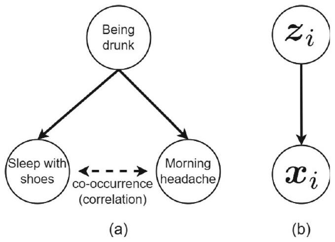
本章三層架構：
- §2 變分推論（Variational Inference）：近似後驗的通用框架——ELBO 推導 + EM 演算法。
- §3 VAE（Variational Autoencoder）：用 encoder/decoder 神經網路把變分推論做成可微、可 backprop 的模型。
- §3.x 訓練細節：reparameterization trick、prior regularization、backprop 訓練、測試階段。
VAE 是「機率深度學習」的代表作——把貝氏推論、神經網路、資訊壓縮三件事織在一起。它不再是最強的圖像生成模型（被 diffusion / autoregressive 取代），但仍是 anomaly detection、半監督學習、科學建模的基石。
示意圖解（inline SVG）。
設資料 $\boldsymbol{x}_i$ 來自「latent $z_i$ 生成的條件分佈 $\mathbb{P}(\boldsymbol{x}_i\mid z_i,\theta)$」，$z_i$ 有先驗 $\mathbb{P}(z_i\mid\theta)$。貝氏定理告訴我們後驗：
$$\mathbb{P}(z_i\mid\boldsymbol{x}_i,\theta) = \frac{\mathbb{P}(\boldsymbol{x}_i\mid z_i,\theta)\mathbb{P}(z_i\mid\theta)}{\mathbb{P}(\boldsymbol{x}_i\mid\theta)}$$
看起來簡單，但分母 $\mathbb{P}(\boldsymbol{x}_i\mid\theta)=\int\mathbb{P}(\boldsymbol{x}_i\mid z_i,\theta)\mathbb{P}(z_i\mid\theta)\,dz_i$ 是對所有 $z_i$ 的積分——$z_i$ 是高維連續時，**這個積分沒有解析解**，暴力數值積分也做不到。
這就是「後驗不可解（intractable）」問題，是機率模型的核心痛點。
變分推論的核心想法：既然 $\mathbb{P}(z_i\mid\boldsymbol{x}_i,\theta)$ 算不出來，找一個簡單的分佈 $q(z_i)$ 來近似它——這是「variational approximation」。$q$ 通常選指數族（高斯、Bernoulli），讓計算 tractable。
逼近的指標是 KL 散度 $D_{\text{KL}}(q\|\mathbb{P}(z_i\mid\boldsymbol{x}_i,\theta))$——越小代表 $q$ 越接近真後驗。最小化 KL = 找最好的 $q$。
但 $D_{\text{KL}}(q\|\mathbb{P}(z_i\mid\boldsymbol{x}_i,\theta))$ 本身包含不可解的後驗，所以下一節要把 KL「翻過來」——用 ELBO 繞過。
2.1
ELBO：log-likelihood 的下界
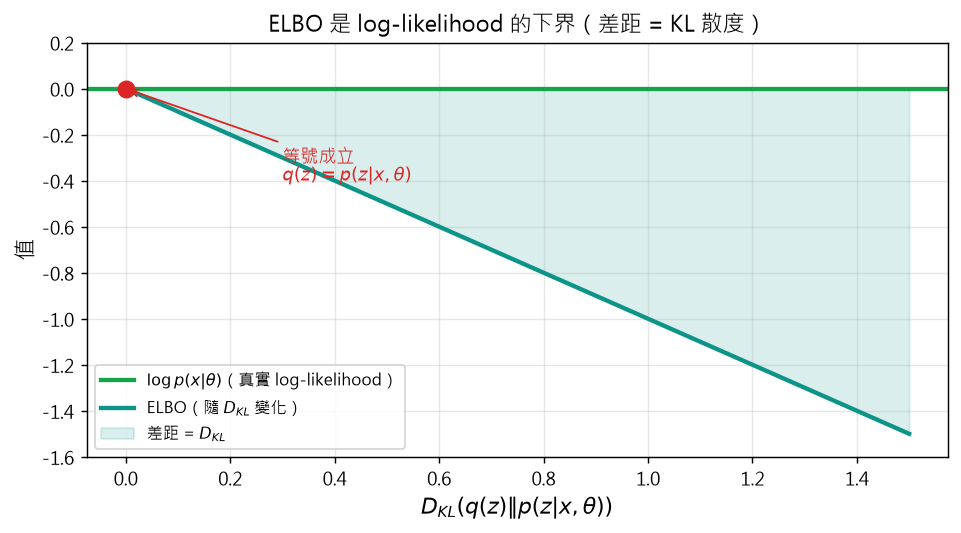
示意圖解：請對照 B0 準則（遮住文字仍能看出因果/反直覺）。
🤖 AI 生圖可用：重繪此示意圖的提示詞（結構化）
WHAT: 兩條水平線：上方綠色實線 = log p(x|θ) 真實 log-likelihood（高度 = 0），下方 teal 實線 = ELBO（隨 KL 散度遞減的曲線，從 ELBO=0 隨 KL 遞減）。中間填充半透明 teal 標籤「差距 = D_KL」；KL=0 處有紅色圓點 + 紅色文字「等號成立 q(z)=p(z|x,θ)」。
WHY: 凸顯 ELBO 是 log-likelihood 的下界，且差距恰好 = D_KL(q||p(z|x,θ))。視覺上讓「ELBO ≤ log p」這個不等式一眼可讀。
MUST show: (1) 上方水平 log p 線；(2) 下方斜下的 ELBO 曲線；(3) 兩線間的差距區填色標 KL；(4) KL=0 處紅點標等號條件；(5) x 軸標 D_KL、y 軸標「值」。
AVOID: 不要用隨機散點、不要用柱狀圖、不要把 ELBO 畫成比 log p 高。
STYLE: clean scientific plot, white background, 標題「ELBO 是 log-likelihood 的下界（差距 = KL 散度）」。
互動 demo：ELBO 視覺化：log p 與 ELBO 的差距 = KL
ELBO 是 log-likelihood 的下界：
$\log p(x\mid\theta) = \text{ELBO} + D_{KL}(q(z)\|p(z\mid x,\theta))$
怎麼操作：觀察不同 KL 值時，log-likelihood 線（綠）與 ELBO 曲線（teal）的差距。
觀察什麼：差距 = $D_{KL}$ 隨 q 與真後驗的差異擴大而增加。
正確基準：KL=0 時差距為 0，ELBO = log p；q 越偏離真後驗，差距越大。
ELBO（Evidence Lower Bound）是變分推論的核心數學工具——一個我們真的能算的量，且它跟 log-likelihood 只差一個非負的 KL。
推導（重點是「翻轉 KL 方向」）：
$$D_{\text{KL}}(q(z_i)\|\mathbb{P}(z_i\mid\boldsymbol{x}_i,\theta)) = \log\mathbb{P}(\boldsymbol{x}_i\mid\theta) + D_{\text{KL}}(q(z_i)\|\mathbb{P}(\boldsymbol{x}_i,z_i\mid\theta))$$
第二項 $D_{\text{KL}}(q\|\mathbb{P}(\boldsymbol{x}_i,z_i\mid\theta))$ 涉及聯合分佈（traetable），不是後驗。重新整理：
$$\log\mathbb{P}(\boldsymbol{x}_i\mid\theta) = D_{\text{KL}}(q\|\mathbb{P}(z_i\mid\boldsymbol{x}_i,\theta)) + \underbrace{-D_{\text{KL}}(q\|\mathbb{P}(\boldsymbol{x}_i,z_i\mid\theta))}_{\text{ELBO}\,\mathcal{L}}$$
因為 KL $\ge 0$，得 $\mathcal{L}(q,\theta) \le \log\mathbb{P}(\boldsymbol{x}_i\mid\theta)$——ELBO 是 log-likelihood 的下界。
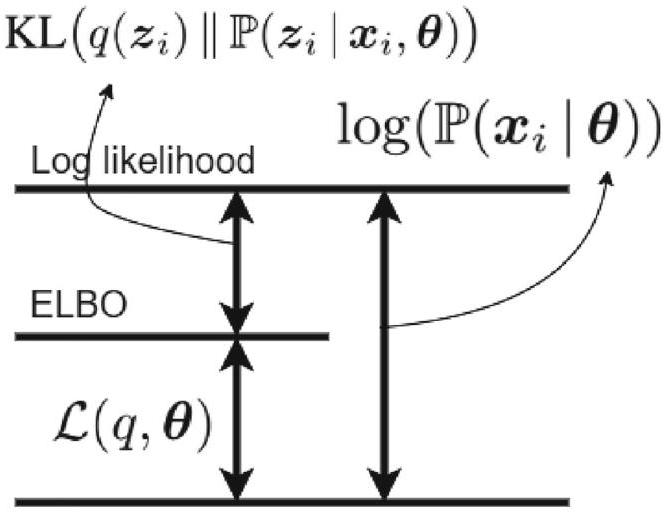
等號成立條件：$q(z_i)=\mathbb{P}(z_i\mid\boldsymbol{x}_i,\theta)$（即 $q$ 等於真後驗）。此時 ELBO = log-likelihood。
實務意涵：與其最大化 intractable 的 log-likelihood，不如最大化 ELBO（可算），同時最小化 $D_{\text{KL}}(q\|\mathbb{P}(z_i\mid\boldsymbol{x}_i,\theta))$（讓 $q$ 接近真後驗）——兩者等價，因為只差一個常數（log-likelihood）。
2.2
EM：missing data 的迭代解法
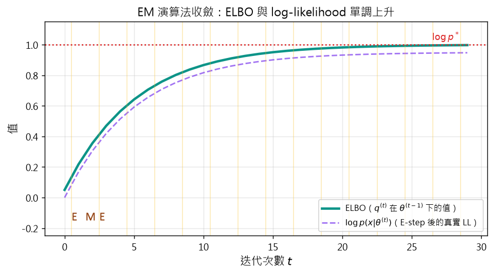
示意圖解：請對照 B0 準則（遮住文字仍能看出因果/反直覺）。
🤖 AI 生圖可用：重繪此示意圖的提示詞（結構化）
WHAT: x 軸是 EM 迭代次數 0–29，y 軸是值 0–1.15。兩條曲線：teal 實線 = ELBO（單調上升到 1.0），紫色虛線 = log p(x|θ) 真實 log-likelihood（永遠在 ELBO 上方一點點）。x 軸上有黃色半透明垂直條紋在每個整數 iteration（標 E-step）；標籤「E」「M」交替在底部。紅色虛線水平線 y=1.0 標「收斂值 log p*」。
WHY: 凸顯 EM 的兩個保證：(1) ELBO 單調遞增；(2) ELBO 始終 ≤ log p（緊度隨迭代改進）。E/M 條紋標出交替更新的節奏。
MUST show: (1) 兩條曲線（ELBO、log p）皆單調上升；(2) E/M 垂直條紋；(3) 收斂水平線；(4) E/M 標籤。
AVOID: 不要用對數軸、不要省略 E/M 標記、不要把 log p 畫成下降。
STYLE: clean scientific plot, 標題「EM 演算法收斂：ELBO 與 log-likelihood 單調上升」。
互動 demo：EM 演算法收斂：ELBO 與 log p 同步上升
EM 兩步交替：
E-step：$q^{(t)}\leftarrow p(z\mid x,\theta^{(t-1)})$
M-step：$\theta^{(t)}\leftarrow\arg\max_\theta\mathcal{L}(q^{(t)},\theta)$
怎麼操作：拖動 steps 滑桿觀察 EM 迭代的進度。
觀察什麼：ELBO（teal）隨迭代單調上升逼近 log-likelihood 漸近線（紅色虛線）。
正確基準：n=30 步後 ELBO ≈ log p* = 1.0；ELBO 永遠 ≤ log p。
EM（Expectation-Maximization）是處理「資料不完整（missing data）」的經典演算法，把 missing 換成期望，再用 MLE。
原文的對話（簡化版）：
- 「資料有 missing 怎麼辦？」
- 「用 missing 的期望代替！」
- 「然後 MLE 就 work 了！」
兩個步驟：
E-step（Expectation）：對 missing/latent 變數取期望，算出 conditional expectation of log-likelihood $\mathcal{Q}(\theta\mid\theta^{(t-1))}$。
M-step（Maximization）：最大化 E-step 算出的 $\mathcal{Q}$，更新參數 $\theta^{(t)}=\arg\max_\theta\mathcal{Q}(\theta\mid\theta^{(t-1))}$。
收斂保證：EM 演算法每一步都單調提升 log-likelihood（$\log\mathbb{P}(X\mid\theta^{(t)})\ge\log\mathbb{P}(X\mid\theta^{(t-1))}$），所以一定收斂到 local maximum。
直覺比喻：你在找最高山的山頂。E-step 估算「我在哪條等高線上」，M-step 沿著切線往上爬。兩步交替，重複到不再上升。
示意圖解（inline SVG）。
EM 的直覺起點：當資料不完整時，MLE 失效。
例：病人血壓資料中，有些測量值是 0（真的 0），有些是 missing（未知）。如果把所有 0 當成「真的 0」去 fit 高斯，會嚴重偏差——missing 不等於 0。
EM 的樸素想法：
- 「資料有 missing——丟掉吧」→ 浪費資料。
- 「missing 用某個猜測補上（例如平均值）」→ 不準。
- 「missing 用它的期望補上」→ 對了！
- 「把補完的「期望 log-likelihood」做 MLE」→ EM。
這個想法在 EM 的兩個步驟之間反覆：
- E-step：給當前 $\theta^{(t)}$，對 missing 算 $\mathbb{E}_{\mathbb{P}(Z\mid X,\theta^{(t)})}[\log\mathbb{P}(X,Z\mid\theta)]$（期望 log-likelihood）。
- M-step：$\theta^{(t+1)}=\arg\max_\theta\mathbb{E}[\log\mathbb{P}\mid\theta^{(t)}]$（對期望的 log-likelihood 做 MLE）。
為什麼 EM 在變分推論也適用？ 因為變分推論的「真實後驗 $\mathbb{P}(z\mid X,\theta)$ 不可解」等同於「latent $z$ 的值不完整」——E-step 用 $q(z)$（變分近似）填補這個不完整。
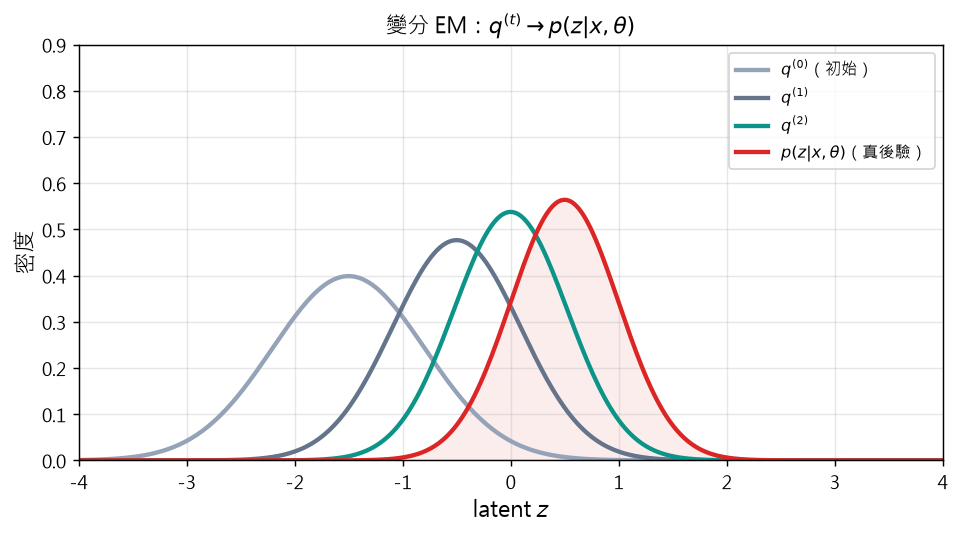
示意圖解：請對照 B0 準則（遮住文字仍能看出因果/反直覺）。
🤖 AI 生圖可用：重繪此示意圖的提示詞（結構化）
WHAT: x 軸是 latent z（-4 到 4），y 軸是密度 0–0.9。四條曲線疊加：灰色「q^(0)（初始）」高斯中心 -1.5、寬度大；深灰「q^(1)」中心 -0.5、寬度中；teal「q^(2)」中心 0、寬度窄；紅色「p(z|x,θ) 真後驗」中心 0.5、寬度最窄。紅色曲線下方有淡紅色填色區。
WHY: 凸顯「變分 EM 反覆更新 q，最終 q^(t) → p(z|x,θ) 真後驗」——視覺上的「逐步逼近」概念。
MUST show: (1) 四條高斯曲線由寬到窄、由偏離到對齊的過渡；(2) 真後驗用紅色區分；(3) 圖例標每條線的迭代次數；(4) x 軸標 z。
AVOID: 不要只畫一條曲線、不要用柱狀圖、不要省略迭代順序。
STYLE: clean scientific plot, 標題「變分 EM：q^(t) → p(z|x,θ)」。
互動 demo：變分 EM：q^(t) 逐步逼近真後驗
變分推論的 E-step 目標：$q^{(t)}\approx p(z\mid x,\theta^{(t-1)})$
用 KL 散度衡量逼近程度。
怎麼操作：拖動 t 滑桿觀察 q^(t) 隨迭代變化。
觀察什麼：q 從偏離的初始分佈，逐步逼近真後驗（紅色）。
正確基準：t=5：q center 0.45, sig 0.51（接近真後驗 μ=0.5, σ=0.5）。
把 EM 套到變分推論：把 ELBO 拆成 E-step（找最佳 $q$）和 M-step（找最佳 $\theta$）。
由式 (5)：$\mathcal{L}(q,\theta) = \log\mathbb{P}(\boldsymbol{x}_i\mid\theta) - D_{\text{KL}}(q(z_i)\|\mathbb{P}(z_i\mid\boldsymbol{x}_i,\theta))$
EM for Variational Inference：
$$\text{E-step:}\quad q^{(t)} := \arg\max_q\mathcal{L}(q,\theta^{(t-1)})$$
$$\text{M-step:}\quad \theta^{(t)} := \arg\max_\theta\mathcal{L}(q^{(t)},\theta)$$
E-step：因為 $\log\mathbb{P}(\boldsymbol{x}_i\mid\theta^{(t-1)})$ 跟 $q$ 無關，最大化 $\mathcal{L}$ = 最小化 $D_{\text{KL}}(q\|\mathbb{P}(z\mid\boldsymbol{x},\theta^{(t-1)})) \ge 0$，最小值為 0。所以
$$q^{(t)}(z_i) \leftarrow \mathbb{P}(z_i\mid\boldsymbol{x}_i,\theta^{(t-1)})$$
（E-step 讓 $q$ 盡量接近真後驗——但若真後驗不可解，實際上是用近似的 $q$ 家族最佳匹配）
M-step：固定 $q^{(t)}$，$\mathcal{L}(q^{(t)},\theta) = -D_{\text{KL}}(q^{(t)}\|\mathbb{P}(\boldsymbol{x},z\mid\theta)) + \text{const}$，最大化 = 最小化 $D_{\text{KL}}$ =
$$\theta^{(t)} \leftarrow \arg\max_\theta\mathbb{E}_{q^{(t)}(z_i)}[\log\mathbb{P}(\boldsymbol{x}_i,z_i\mid\theta)]$$
這就是 EM 在變分推論的形式。直覺：E-step「把 ELBO 拉向 log-likelihood」（讓 $q$ 更接近後驗），M-step「把 log-likelihood 拉高」。兩者反覆，互相抬升。
示意圖解（inline SVG）。
VAE（Variational Autoencoder, Kingma 2014）把變分推論放進 autoencoder 架構，讓 ELBO 可以用 backpropagation 訓練。
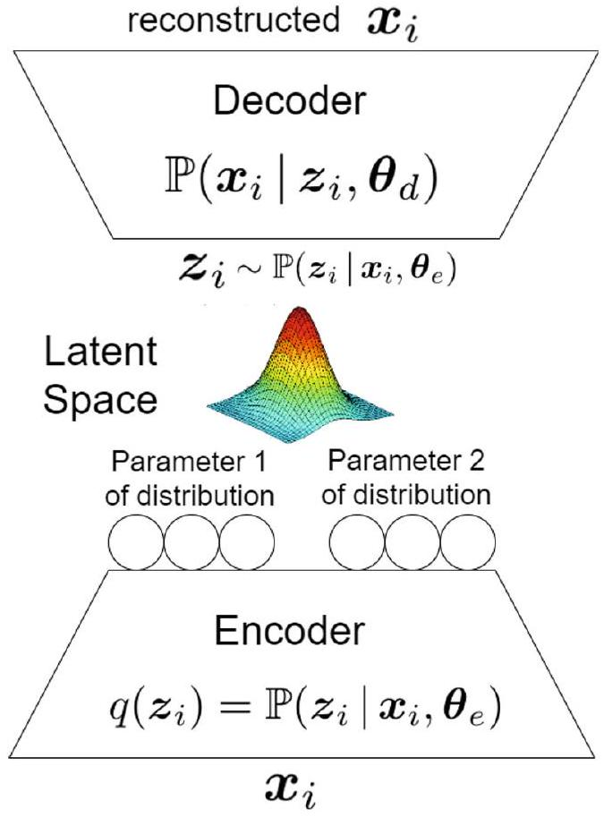
VAE 結構：
- Encoder（推論網路）：輸入 $\boldsymbol{x}_i$，輸出 latent 分佈的參數（常用多元高斯的 $\mu_{z\mid x}$ 和 $\Sigma_{z\mid x}$）。
- Sampling：從 $\mathcal{N}(\mu_{z\mid x},\Sigma_{z\mid x})$ 抽 $z_i$。
- Decoder（生成網路）：輸入 $z_i$，輸出重建 $\hat{\boldsymbol{x}}_i$ 或 $\mathbb{P}(\boldsymbol{x}_i\mid z_i,\theta_d)$ 的參數。
VAE vs AE（標準 autoencoder）：
- AE：encoder 直接輸出 $z$（確定性）。
- VAE：encoder 輸出 $z$ 的分佈參數（隨機性），再從中採樣。
這個差異讓 latent space 變成「連續的機率分佈」而非「離散的編碼」——這是 VAE 能生成新資料的關鍵：從 prior $p(z)$ 抽 $z$，過 decoder 就能生成新 $\hat{\boldsymbol{x}}$。
VAE 的 ELBO 目標：
$$\mathcal{L}=\underbrace{\mathbb{E}_{q(z\mid x)}[\log\mathbb{P}(\boldsymbol{x}\mid z)]}_{\text{reconstruction}} - \underbrace{D_{\text{KL}}(q(z\mid x)\|p(z))}_{\text{regularization}}$$
第一項「reconstruction」讓 $z$ 經 decoder 後能重建 $\boldsymbol{x}$；第二項「KL」讓 $q(z\mid x)$ 不要偏離 prior $p(z)$（常用 $\mathcal{N}(0,I)$）。
3.1
VAE 的組成：encoder/decoder
示意圖解（inline SVG）。
VAE 由三大塊組成，每塊都可微，所以整個網路可以用 backpropagation 端到端訓練。
- Encoder：$\boldsymbol{x}_i\in\mathbb{R}^d \to z_i\in\mathbb{R}^p$ 的條件分佈 $q(z_i)=\mathbb{P}(z_i\mid\boldsymbol{x}_i,\theta_e)$。常用多元高斯，輸出 $m$ 組神經元（mean + covariance + 其他參數）。
- Latent 採樣：$z_i \sim q(z_i)$（這個隨機性是 VAE 的關鍵）。
- Decoder：$z_i\in\mathbb{R}^p \to \hat{\boldsymbol{x}}_i\in\mathbb{R}^d$。常用高斯，輸出 $\boldsymbol{x}_i$ 的重建或 $\mathbb{P}(\boldsymbol{x}_i\mid z_i,\theta_d)$ 的參數。
訓練目標：最大化 ELBO，等價於：
- Reconstruction 項：$z$ 過 decoder 要能重建 $\boldsymbol{x}$。
- KL 項：$q(z\mid x)$ 不要離 prior $p(z)=\mathcal{N}(0,I)$ 太遠（讓 latent space 有結構）。
這兩項形成張力：reconstruction 想把 $z$ 編碼得「專屬每筆資料」，KL 想讓 $z$ 都「接近標準常態」。VAE 的解是在這兩者間取平衡——所以學出來的 latent space 連續、有結構、可採樣生成。
3.1.1
Encoder：輸出 $\mu, \sigma$
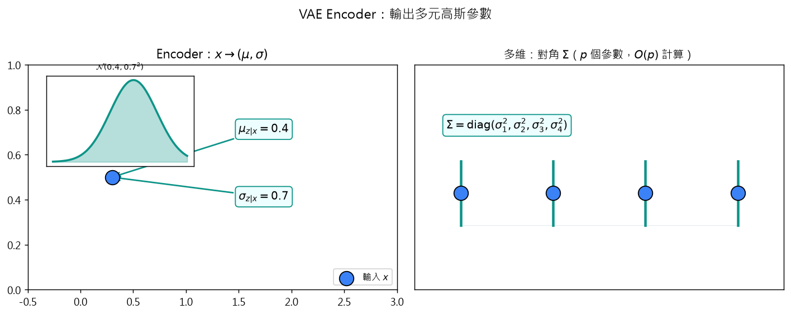
示意圖解：請對照 B0 準則（遮住文字仍能看出因果/反直覺）。
🤖 AI 生圖可用：重繪此示意圖的提示詞（結構化）
WHAT: 左右兩子圖。左：單一輸入 x（藍點）→ Encoder 神經網路方塊 → 輸出兩個框標 μ=0.4 和 σ=0.7 → 插圖顯示 N(0.4, 0.7²) 高斯曲線。右：4 個輸入 → 對角 Σ（只畫對角線，灰色非對角淡化），標題「多維：對角 Σ（p 個參數，O(p) 計算）」。
WHY: 凸顯 VAE encoder 設計的兩個關鍵：(1) 單一輸入 → 兩個參數 μ, σ；(2) 對角協方差省記憶體省計算。
MUST show: (1) 左：x → 兩個分開的輸出框；(2) 左：插圖高斯形狀；(3) 右：4 維對角示意，只對角線明顯、非對角淡化；(4) 整體標題。
AVOID: 不要把 encoder 畫成黑箱、不要把對角畫成完整矩陣。
STYLE: clean scientific plot, 標題「VAE Encoder：輸出多元高斯參數」。
互動 demo：VAE Encoder：對角協方差節省參數
VAE encoder 輸出多元高斯參數 $(\mu_{z\mid x},\Sigma_{z\mid x})$，
常用對角協方差：$p$ 個神經元 vs 完整 $p^2$ 個。
怎麼操作：拖動 $p$ 滑桿改變 latent 維度。
觀察什麼：對角矩陣非對角元素為 0（淡灰），只有 $p$ 個 σ 值（teal）。
正確基準：$p=4$ 時對角需 4 個參數，完整需 16 個；對角省 75% 參數。
Encoder 是一個神經網路，輸入 $\boldsymbol{x}_i\in\mathbb{R}^d$，輸出 latent $z_i$ 的條件分佈參數。最常見的選擇是多元高斯（對角共變異數）：
$$q(z_i) = \mathbb{P}(z_i\mid\boldsymbol{x}_i,\theta_e) = \mathcal{N}(z_i\mid\mu_{z\mid x},\Sigma_{z\mid x})$$
其中：
- $\mu_{z\mid x}=\boldsymbol{e}_1(\boldsymbol{x}_i,\theta_{e,1})\in\mathbb{R}^p$（$p$ 個神經元）
- $\Sigma_{z\mid x}=\text{diag}(\boldsymbol{e}_2(\boldsymbol{x}_i,\theta_{e,2}))$（$p$ 個神經元，對角矩陣）
為什麼要對角共變異數？計算便宜 + 仍能表達多維分佈。完整共變異數要 $p\times p$ 個參數、$O(p^3)$ 反矩陣運算；對角只要 $p$ 個、$O(p)$ 即可。
實作細節：常讓 encoder 輸出 $\log\sigma^2$（而不是 $\sigma^2$），再用 $\exp$ 還原——避免 $\sigma^2$ 為負，且梯度更穩定。
若想用更複雜的分佈（如 normalizing flow、混合高斯），可擴充 encoder 輸出更多參數——但訓練難度也增加。
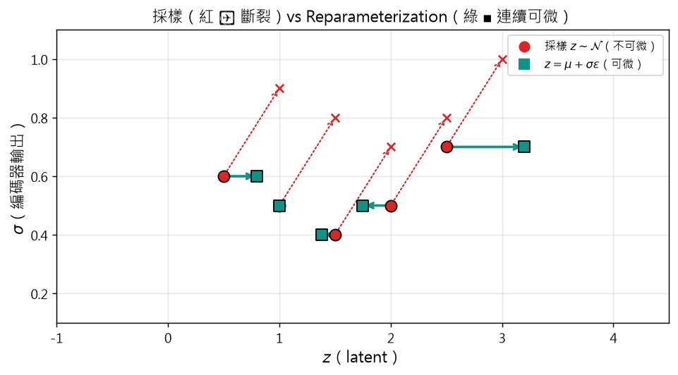
示意圖解：請對照 B0 準則（遮住文字仍能看出因果/反直覺）。
🤖 AI 生圖可用：重繪此示意圖的提示詞（結構化）
WHAT: x 軸是 latent z（-1 到 4.5），y 軸是 σ（0.1 到 1.1）。5 個 (μ, σ) 紅圓點，旁邊用紅色虛線箭頭指向右上的「x 標記」表示直接採樣 z ~ N(μ,σ)（不可微）。同樣 5 個點用 teal 實線箭頭指向右邊的 teal 方塊表示 reparameterization z = μ + σ·ε（可微）。圖例分別標「採樣 z~N（不可微）」、「z=μ+σε（可微）」。
WHY: 凸顯 reparameterization 的關鍵：把隨機性「轉嫁」到 ε，讓 z 對 μ, σ 可微。
MUST show: (1) 同樣 5 個 (μ,σ) 點，但兩種方式連出去（紅虛/紅叉、teal 實/teal 方）；(2) 圖例清楚區分；(3) 紅色虛線表示「不連續 / 不可微」；(4) teal 實線表示「連續可微」。
AVOID: 不要只用一條曲線、不要省略圖例、不要混用顏色。
STYLE: clean scientific plot, 標題「採樣（紅 ✗ 斷裂）vs Reparameterization（綠 ■ 連續可微）」。
互動 demo：Reparameterization：採樣變可微
Reparameterization：$z = \mu + \sigma \cdot \epsilon$，其中 $\epsilon\sim\mathcal{N}(0,1)$ 與 $\mu,\sigma$ 無關。
怎麼操作：拖動 $\mu$、$\sigma$ 滑桿觀察兩種採樣方式。
觀察什麼：直接採樣 $z\sim\mathcal{N}$（紅）不可微；reparameterization（teal）讓 $z$ 對 $\mu,\sigma$ 可微。
正確基準：兩種採樣的分佈相同（都是 $\mathcal{N}(\mu,\sigma^2)$），但只有 reparameterization 讓 backprop 流通。
Encoder 給出 $q(z_i)$ 的參數後，從中採樣得到 $z_i$：
$$z_i \sim q(z_i) = \mathbb{P}(z_i\mid\boldsymbol{x}_i,\theta_e)$$
這個採樣是 VAE 的核心——隨機性讓 latent space 是連續分佈而非離散編碼。但採樣在 backprop 中有個問題：
$$z_i \sim \mathcal{N}(\mu_{z\mid x},\Sigma_{z\mid x}) \Rightarrow \frac{\partial z_i}{\partial \mu_{z\mid x}}\,\text{不存在（不確定性）}$$
reparameterization trick：把採樣的隨機性「拉出來」，讓梯度可以流過：
$$z_i = \mu_{z\mid x} + \sigma_{z\mid x}\odot\epsilon_i, \quad \epsilon_i\sim\mathcal{N}(0,I)$$
現在 $z_i$ 是 $\mu$、$\sigma$ 的確定性函數（再加上外部隨機變數 $\epsilon_i$），梯度可流：$\frac{\partial z_i}{\partial \mu_{z\mid x}}=1$、$\frac{\partial z_i}{\partial \sigma_{z\mid x}}=\epsilon_i$。
為什麼這個 trick 重要？ 沒有它，採樣的隨機性會讓 backprop 中斷、無法用 SGD 訓練整個 VAE。有了它，VAE 才能用標準 backprop 端到端訓練。
推廣：對任何可重參數化的分佈（高斯、連續 flow 等），都可以寫成 $z=g(\theta,\epsilon)$，其中 $\epsilon$ 與 $\theta$ 獨立——這就是「reparameterization」的一般形式。
3.1.3
Decoder：從 $z$ 重建 $x$
示意圖解（inline SVG）。
Decoder 也是一個神經網路，輸入 latent $z_i\in\mathbb{R}^p$，輸出 $\hat{\boldsymbol{x}}_i$（重建）或 $\mathbb{P}(\boldsymbol{x}_i\mid z_i,\theta_d)$ 的參數。
兩種設計：
- 直接重建：decoder 輸出 $\hat{\boldsymbol{x}}_i$，loss = $\|\hat{\boldsymbol{x}}_i - \boldsymbol{x}_i\|^2$。最常見於連續資料。
- 輸出分佈參數：decoder 輸出 $\mu_x$ 和 $\sigma_x$（多元高斯）或 Bernoulli 的機率 $p$。Loss = $-\log\mathbb{P}(\boldsymbol{x}_i\mid z_i,\theta_d)$。
實務上，連續影像常用 (1) + Gaussian loss；binary 影像用 (2) + Bernoulli loss。
Decoder 的角色：作為「生成器」——$z\to\hat{\boldsymbol{x}}$ 是可微函數。訓練完成後，從 prior $\mathcal{N}(0,I)$ 抽 $z$，過 decoder 就能生成新資料——這是 VAE 的生成能力。
Decoder 設計的限制：解碼空間受限於 decoder 的容量。若 decoder 太簡單（如單層線性），就只能生成簡單資料；複雜資料需要深 decoder（CNN for images, Transformer for text）。
示意圖解（inline SVG）。
VAE 訓練可以用 EM 框架理解：encoder 參數 $\theta_e$ 是「變分近似 $q$ 的角色」，decoder 參數 $\theta_d$ 是「生成分佈 $\mathbb{P}(\boldsymbol{x}\mid z)$ 的角色」。
EM for VAE（per data point）：
$$\text{E-step:}\quad \theta_e^{(t)} := \arg\max_{\theta_e}\mathcal{L}(\theta_e,\theta_d^{(t-1)},\boldsymbol{x}_i)$$
$$\text{M-step:}\quad \theta_d^{(t)} := \arg\max_{\theta_d}\mathcal{L}(\theta_e^{(t)},\theta_d,\boldsymbol{x}_i)$$
實際上 EM 不直接算 argmax（可能 intractable），改用小批次 SGD：每個 batch $b$ 筆資料，每步做一次 gradient ascent on E-step、一次 on M-step：
$$\theta_e^{(t)} \leftarrow \theta_e^{(t-1)} + \eta_e\frac{\partial\sum_{i=1}^b\mathcal{L}(\theta_e,\theta_d^{(t-1)},\boldsymbol{x}_i)}{\partial\theta_e}$$
$$\theta_d^{(t)} \leftarrow \theta_d^{(t-1)} + \eta_d\frac{\partial\sum_{i=1}^b\mathcal{L}(\theta_e^{(t)},\theta_d,\boldsymbol{x}_i)}{\partial\theta_d}$$
ELBO 簡化（式 20）：
$$\sum_{i=1}^b\mathcal{L}(q,\theta) = -\sum_{i=1}^b D_{\text{KL}}(\mathbb{P}(z_i\mid\boldsymbol{x}_i,\theta_e)\|\mathbb{P}(\boldsymbol{x}_i,z_i\mid\theta_d))$$
這個式子仍含 intractable 的 $\mathbb{P}(\boldsymbol{x}_i,z_i\mid\theta_d)$（要對 $z$ 積分），所以接下來 §3.2.1/§3.2.2 給兩個 Monte Carlo 簡化方案。
3.2.1
ELBO 簡化 Type 1：直接 Monte Carlo
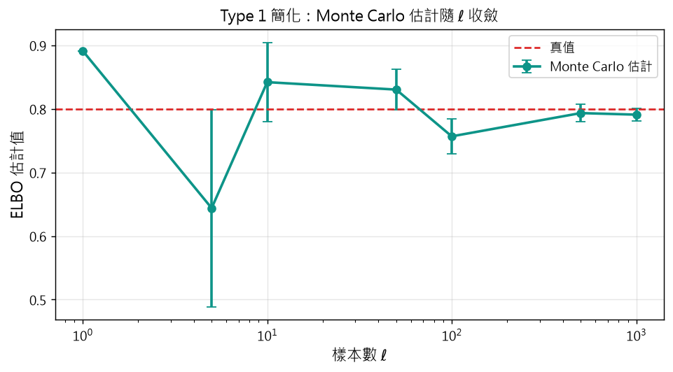
示意圖解：請對照 B0 準則（遮住文字仍能看出因果/反直覺）。
🤖 AI 生圖可用：重繪此示意圖的提示詞（結構化）
WHAT: x 軸是對數刻度的樣本數 ℓ（1, 5, 10, 50, 100, 500, 1000），y 軸是 ELBO 估計值。teal 圓點 + 誤差棒，隨 ℓ 增大誤差棒越短。紅色水平虛線 y=0.8 是「真值」。右上方有圖例標「Monte Carlo 估計」、「真值」。
WHY: 凸顯「Type 1 簡化用 Monte Carlo 估計 ELBO，樣本越多越準」的性質。
MUST show: (1) 對數 x 軸；(2) 誤差棒隨 ℓ 縮小；(3) 紅色虛線標真值；(4) 至少 5 個 ℓ 點。
AVOID: 不要用線性 x 軸、不要省略誤差棒、不要畫隨機散點。
STYLE: clean scientific plot, 標題「Type 1 簡化：Monte Carlo 估計隨 ℓ 收斂」。
互動 demo：Type 1 簡化：Monte Carlo 估計 ELBO
Type 1 簡化：
$\mathcal{L}\approx\frac{1}{\ell}\sum_{j=1}^\ell[\log p(x,z_{i,j}\mid\theta_d) - \log p(z_{i,j}\mid x,\theta_e)]$
誤差 $\propto 1/\sqrt{\ell}$。
怎麼操作：拖動 $\ell$ 滑桿改變採樣數。
觀察什麼：$\ell$ 增大，估計值的誤差棒變短，趨近真值 0.8。
正確基準：$\ell=1$ 時誤差棒很大；$\ell\to\infty$ 時收斂到真值。
Type 1 簡化的精神：不拆 KL，直接對 ELBO 裡的期望做 Monte Carlo 估計。
原 ELBO（式 20）：$\mathcal{L}=-\sum_i D_{\text{KL}}(\mathbb{P}(z_i\mid\boldsymbol{x}_i,\theta_e)\|\mathbb{P}(\boldsymbol{x}_i,z_i\mid\theta_d))$
展開（用 KL 定義）：
$$\mathcal{L}=-\sum_i\mathbb{E}_{\mathbb{P}(z_i\mid\boldsymbol{x}_i,\theta_e)}\left[\log\frac{\mathbb{P}(z_i\mid\boldsymbol{x}_i,\theta_e)}{\mathbb{P}(\boldsymbol{x}_i,z_i\mid\theta_d)}\right]$$
這是個 $\mathbb{P}(z_i\mid\boldsymbol{x}_i,\theta_e)$ 下的期望，直接 Monte Carlo 估計：抽 $\ell$ 個樣本 $\{z_{i,j}\}_{j=1}^\ell \sim \mathbb{P}(z_i\mid\boldsymbol{x}_i,\theta_e)$，
$$\mathbb{E}_{\mathbb{P}(z\mid x)}[f(z)] \approx \frac{1}{\ell}\sum_{j=1}^\ell f(z_{i,j})$$
代入 ELBO：
$$\sum_i\mathcal{L} \approx \sum_i\frac{1}{\ell}\sum_{j=1}^\ell\left[\log\mathbb{P}(\boldsymbol{x}_i,z_{i,j}\mid\theta_d) - \log\mathbb{P}(z_{i,j}\mid\boldsymbol{x}_i,\theta_e)\right]$$
特性：
- 簡單直接，不假設 $q$ 的分佈形式。
- 但 KL 沒有拆開，兩個對數比的梯度都必須估計，有時數值不穩定。
- $\ell$ 越大估計越準，但計算成本也越高（常用 $\ell=1$，靠 mini-batch 增大等效樣本數）。
3.2.2
ELBO 簡化 Type 2：KL 拆解
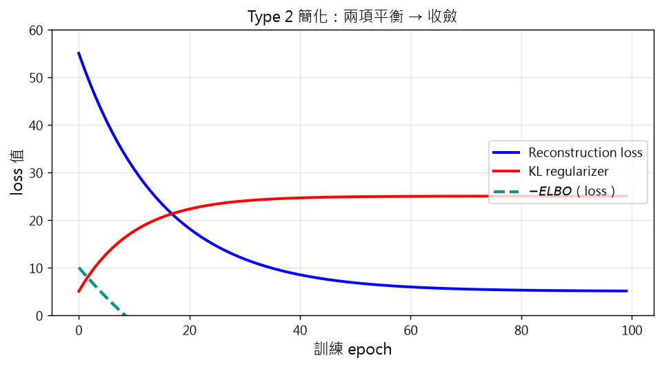
示意圖解：請對照 B0 準則（遮住文字仍能看出因果/反直覺）。
🤖 AI 生圖可用：重繪此示意圖的提示詞（結構化）
WHAT: x 軸是訓練 epoch 0–100。三條曲線：藍色 = reconstruction loss（從 55 指數衰減到 5）、紅色 = KL regularizer（從 0 上升到 25 漸近）、teal 虛線 = -ELBO（總 loss，下降趨勢）。圖例在右中。
WHY: 凸顯 Type 2 簡化把 ELBO 拆成 reconstruction + KL 兩項後，兩項動態：reconstruction 快速下降、KL 緩慢上升，總體 ELBO 收斂。
MUST show: (1) 三條曲線（recon、KL、-ELBO）；(2) recon 衰減、KL 上升；(3) -ELBO 整體下降趨勢。
AVOID: 不要省略 -ELBO 線、不要讓曲線交叉時混淆。
STYLE: clean scientific plot, 標題「Type 2 簡化：兩項平衡 → 收斂」。
互動 demo：Type 2 簡化：β 權衡 KL 與 reconstruction
Type 2：ELBO = $-\text{recon} - \beta \cdot D_{KL}$。
$\beta$ 越大 latent 越接近 prior（正則化強），但 reconstruction 變差。
怎麼操作：拖動 $\beta$ 滑桿觀察權衡。
觀察什麼：$\beta$ 變大：recon loss 上升、$-\text{ELBO}$ 上升（loss 變大），trade-off 顯而易見。
正確基準：$\beta=0.5$：recon ≈ 12.5、$-\text{ELBO}\approx 18.5$；$\beta=2.0$：recon ≈ 35、$-\text{ELBO}\approx 59$。
Type 2 簡化更乾淨：把 ELBO 拆成兩項，第一項是 tractable 的 KL、第二項是 Monte Carlo 可估計的 reconstruction。
拆解：
$$\mathcal{L}=-\sum_i D_{\text{KL}}(\mathbb{P}(z\mid\boldsymbol{x},\theta_e)\|\mathbb{P}(\boldsymbol{x},z\mid\theta_d))$$
$$=-\sum_i D_{\text{KL}}(\mathbb{P}(z\mid\boldsymbol{x},\theta_e)\|\mathbb{P}(z)) + \sum_i\mathbb{E}_{\mathbb{P}(z\mid\boldsymbol{x},\theta_e)}[\log\mathbb{P}(\boldsymbol{x}\mid z,\theta_d)]$$
第二項是「reconstruction log-likelihood」——$z$ 過 decoder 後能重建 $\boldsymbol{x}$ 的對數機率。
第一項是「KL regularization」——$q(z\mid x)$ 不要偏離 prior $p(z)$。
Monte Carlo 估計第二項（抽 $\ell$ 個 $z_{i,j}\sim\mathbb{P}(z_i\mid\boldsymbol{x}_i,\theta_e)$）：
$$\sum_i\mathcal{L} \approx -\sum_i D_{\text{KL}}(q\|p) + \sum_i\frac{1}{\ell}\sum_{j=1}^\ell\log\mathbb{P}(\boldsymbol{x}_i\mid z_{i,j},\theta_d)$$
進一步對第一項也用 MC 估計（抽同樣的 $z_{i,j}$）：
$$\sum_i\mathcal{L} \approx -\sum_i\frac{1}{\ell}\sum_{j=1}^\ell\left[\log\mathbb{P}(z_{i,j}\mid\boldsymbol{x}_i,\theta_e)-\log\mathbb{P}(z_{i,j})\right] + \sum_i\frac{1}{\ell}\sum_{j=1}^\ell\log\mathbb{P}(\boldsymbol{x}_i\mid z_{i,j},\theta_d)$$
KL 項的解析解：若 $q$ 和 prior 都是高斯，KL 有解析解（§3.2.3）——這時訓練更穩定，這是「Type 2 + Gaussian」成為 VAE 標準做法的原因。
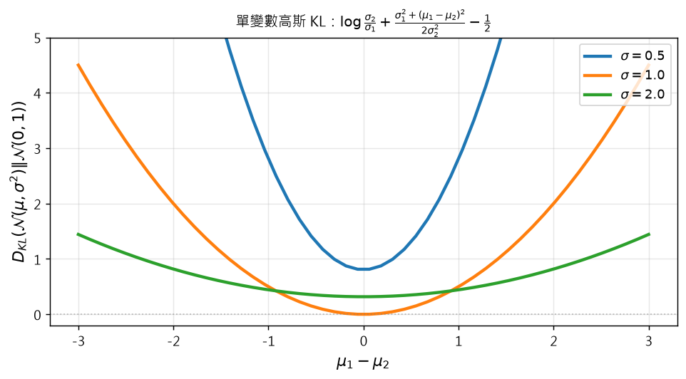
示意圖解：請對照 B0 準則（遮住文字仍能看出因果/反直覺）。
🤖 AI 生圖可用：重繪此示意圖的提示詞（結構化）
WHAT: x 軸是均值差 μ₁-μ₂（-3 到 3），y 軸是單變數高斯 KL 散度 0–5。三條曲線：σ=0.5（陡升）、σ=1.0（中）、σ=2.0（緩升）。灰色水平虛線 y=0 標 0 點。標題完整公式 KL(p1||p2) = log(σ₂/σ₁) + (σ₁²+(μ₁-μ₂)²)/(2σ₂²) - 1/2。
WHY: 凸顯 Lemma 1 的解析表達式：KL 是均值差與標準差比的函數。
MUST show: (1) 三條 σ 曲線；(2) 完整標題公式；(3) y=0 參考線；(4) 圖例標 σ 值。
AVOID: 不要只畫一條曲線、不要省略公式標題。
STYLE: clean scientific plot, 標題含 Lemma 1 公式。
互動 demo：單變數高斯 KL：Lemma 1 解析式
Lemma 1：$D_{KL}(\mathcal{N}(\mu_1,\sigma_1^2)\|\mathcal{N}(\mu_2,\sigma_2^2)) = \log\frac{\sigma_2}{\sigma_1}+\frac{\sigma_1^2+(\mu_1-\mu_2)^2}{2\sigma_2^2}-\frac{1}{2}$
固定 $p_2=\mathcal{N}(0,1)$，拖動 $p_1$ 參數。
怎麼操作：拖動 $\mu_1$、$\sigma_1$ 滑桿。
觀察什麼：兩條高斯分佈隨參數變化；KL 公式給出精確值。
正確基準：$\mu_1=2, \sigma_1=0.5$：KL ≈ log 2 + 0.25+4)/2 - 0.5 ≈ 2.443。
當 $q(z\mid x)$ 和 prior $p(z)$ 都是高斯時，KL 項有解析表達式，不用 Monte Carlo 估計——這讓 VAE 訓練更穩定、變異更小。
Lemma 1（單變數高斯 KL）：$p_1\sim\mathcal{N}(\mu_1,\sigma_1^2)$、$p_2\sim\mathcal{N}(\mu_2,\sigma_2^2)$，
$$D_{\text{KL}}(p_1\|p_2) = \log\frac{\sigma_2}{\sigma_1} + \frac{\sigma_1^2+(\mu_1-\mu_2)^2}{2\sigma_2^2} - \frac{1}{2}$$
證明見 Appendix A。
Lemma 2（多變數高斯 KL）：$p_1\sim\mathcal{N}(\mu_1,\Sigma_1)$、$p_2\sim\mathcal{N}(\mu_2,\Sigma_2)$，維度 $p$，
$$D_{\text{KL}}(p_1\|p_2) = \frac{1}{2}\left[\log\frac{|\Sigma_2|}{|\Sigma_1|} - p + \text{tr}(\Sigma_2^{-1}\Sigma_1) + (\mu_2-\mu_1)^\top\Sigma_2^{-1}(\mu_2-\mu_1)\right]$$
VAE 通常用 prior $p(z)=\mathcal{N}(0,I)$，所以 $\mu_z=0$, $\Sigma_z=I$。代入 Lemma 2：
$$D_{\text{KL}}(\mathcal{N}(\mu_{z\mid x},\Sigma_{z\mid x})\|\mathcal{N}(0,I)) = \frac{1}{2}\left[-\log|\Sigma_{z\mid x}| - p + \text{tr}(\Sigma_{z\mid x}) + \|\mu_{z\mid x}\|^2\right]$$
代入 ELBO Type 2 簡化：
$$\sum_i\mathcal{L} \approx -\sum_i\frac{1}{2}\left[-\log|\Sigma_{z\mid x}^{(i)}| - p + \text{tr}(\Sigma_{z\mid x}^{(i)}) + \|\mu_{z\mid x}^{(i)}\|^2\right] + \sum_i\frac{1}{\ell}\sum_{j=1}^\ell\log\mathbb{P}(\boldsymbol{x}_i\mid z_{i,j},\theta_d)$$
這就是標準 VAE 的 loss（前面加負號變成最小化）。第一項完全可微、無隨機性，訓練非常穩定——這也是為什麼 VAE 預設用高斯 + Standard Normal prior。
示意圖解（inline SVG）。
把 Type 1 或 Type 2 的近似 ELBO 帶回 EM：每一步用 Monte Carlo 估計的 $\tilde{\mathcal{L}}$ 做 gradient ascent。
VAE 訓練（per mini-batch）：
$$\text{E-step:}\quad \theta_e^{(t)} := \theta_e^{(t-1)} + \eta_e\frac{\partial\sum_{i=1}^b\tilde{\mathcal{L}}(\theta_e,\theta_d^{(t-1)},\boldsymbol{x}_i)}{\partial\theta_e}$$
$$\text{M-step:}\quad \theta_d^{(t)} := \theta_d^{(t-1)} + \eta_d\frac{\partial\sum_{i=1}^b\tilde{\mathcal{L}}(\theta_e^{(t)},\theta_d,\boldsymbol{x}_i)}{\partial\theta_d}$$
其中 $\tilde{\mathcal{L}}$ 是 §3.2.1 或 §3.2.2 推導的近似 ELBO。
實務上，VAE 幾乎不用交替 E/M，而是每步同時更新 encoder + decoder（§3.4 backprop 訓練），因為：
- 現代框架（PyTorch/TF）能自動處理兩個 loss 的梯度。
- 交替更新可能導致兩個網路「搶資源」，聯合更新更穩定。
- 實驗上，§3.4 描述的「整體 backprop」效果等同或優於交替 EM。
3.2.5
Prior regularization
示意圖解（inline SVG）。
除了用 $\mathcal{N}(0,I)$ 作 prior，VAE 還可以加 prior regularization——在 ELBO 對 prior 加 penalty，鼓勵 $q(z\mid x)$ 匹配某個特定 prior $\mathbb{P}(z)$。
常見 prior regularization 例子：
- Geodesic priors：在流形上定義的 prior，鼓勵 latent 沿著資料的幾何流形分佈。
- Optimal priors：根據資料特性動態學習最合適的 prior 形式。
- Mixture of Gaussians：prior 本身是混合高斯，讓 latent 學到多模態分佈。
為什麼要自訂 prior？
- 注入領域知識：如果資料有自然的群組結構（如細胞類型、語音 phoneme），可以設計 prior 鼓勵 latent 反映這個結構。
- 提升可解釋性：簡單/結構化的 prior 讓 latent 軸有可詮釋的意義。
- 改善生成品質：適合資料分佈的 prior 讓採樣更合理。
但加 prior regularization 也可能犧牲 ELBO 的 tightness（KL 項不再精確對應 $D_{\text{KL}}(q\|\mathbb{P}(z\mid x,\theta))$）。這是 trade-off。
3.3
Reparameterization trick
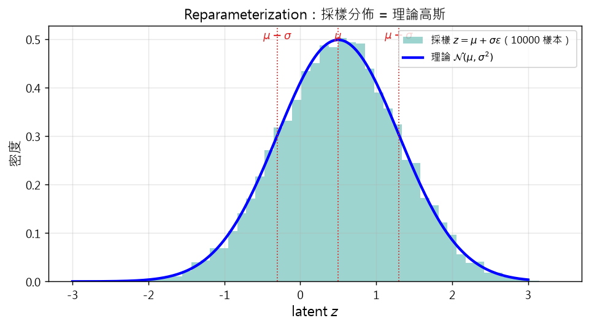
示意圖解：請對照 B0 準則（遮住文字仍能看出因果/反直覺）。
🤖 AI 生圖可用：重繪此示意圖的提示詞（結構化）
WHAT: x 軸是 latent z（-3 到 3），y 軸是密度 0–0.5。teal 直方圖（10000 樣本，透明度 0.4）疊加藍色理論高斯曲線 N(0.5, 0.64)。三條紅色虛線標 μ=0.5、μ-σ≈-0.3、μ+σ≈1.3。
WHY: 凸顯 reparameterization 採樣 = 理論高斯，驗證數值正確性。
MUST show: (1) 直方圖（teal 半透明）；(2) 理論曲線（藍實線）；(3) 三個統計量虛線（μ、μ±σ）；(4) 圖例。
AVOID: 不要只有直方圖沒有曲線、不要省略統計量標記。
STYLE: clean scientific plot, 標題「Reparameterization：採樣分佈 = 理論高斯」。
互動 demo：Reparameterization 驗證：採樣分佈 = 理論高斯
採樣 $z = \mu + \sigma\cdot\epsilon$，$\epsilon\sim\mathcal{N}(0,1)$ 應服從 $\mathcal{N}(\mu,\sigma^2)$。
怎麼操作：拖動 $\mu$、$\sigma$ 滑桿，採樣 3000 個點。
觀察什麼：直方圖（teal）與理論高斯曲線（藍）高度吻合。
正確基準：$\mu=0.5, \sigma=0.8$：採樣平均 ≈ 0.5、標準差 ≈ 0.8。
採樣操作在 backprop 中不可微：$\frac{\partial z}{\partial\mu}$ 不存在（因為 $z$ 是隨機抽的）。這阻礙了 VAE 端到端訓練。
reparameterization trick（Kingma & Welling 2014）：把 $z$ 寫成 $\mu$、$\sigma$ 的確定性函數，加上外部隨機變數 $\epsilon$：
$$z = g(\epsilon, x, \theta_e) = \mu_{z\mid x}(x,\theta_e) + \sigma_{z\mid x}(x,\theta_e) \odot \epsilon, \quad \epsilon\sim\mathcal{N}(0,I)$$
現在梯度可流：
$$\frac{\partial z}{\partial\mu_{z\mid x}} = 1, \quad \frac{\partial z}{\partial\sigma_{z\mid x}} = \epsilon$$
ELBO 期望改寫為：
$$\mathbb{E}_{q(z\mid x)}[f(z)] = \mathbb{E}_{\epsilon\sim\mathcal{N}(0,I)}[f(g(\epsilon,x,\theta_e))]$$
為什麼重要？ 採樣的隨機性被「轉嫁」到 $\epsilon$（不依賴 $\mu,\sigma$），所以 $z$ 對 encoder 參數變成可微。整個 ELBO 的 Monte Carlo 估計變成可微，可以用 backprop 訓練。
推廣：任何可重參數化的分佈（高斯、Logistic、Gamma via location-scale）都能用同樣技巧。對離散分佈（如 Bernoulli、Categorical）採樣不可微——需要 Gumbel-Softmax、REINFORCE 等替代。
3.4
用 backpropagation 訓練
示意圖解（inline SVG）。
實務上 VAE 不用交替 E/M，而用整體 backpropagation：把 encoder、reparameterization、decoder 串成一個可微計算圖，一次梯度下降更新所有參數。
把所有參數 $\theta=\{\theta_e,\theta_d\}$ 一起訓練：
$$\theta^{(t)} := \theta^{(t-1)} - \eta\frac{\partial\sum_{i=1}^b\left[-\tilde{\mathcal{L}}(\theta,\boldsymbol{x}_i)\right]}{\partial\theta}$$
注意：最小化 $-\tilde{\mathcal{L}}$ = 最大化 ELBO。Loss = $-\tilde{\mathcal{L}}$ 包含兩項：
- Reconstruction loss：$\|\hat{\boldsymbol{x}}_i - \boldsymbol{x}_i\|^2$（高斯 decoder）或 $-\log\mathbb{P}(\boldsymbol{x}_i\mid z_i)$（一般）。
- KL loss：$D_{\text{KL}}(q(z\mid x)\|p(z))$（高斯先驗時有解析式）。
實務 loss 寫法：
$$\text{loss} = \text{MSE}(\hat{\boldsymbol{x}}_i, \boldsymbol{x}_i) + \beta\cdot D_{\text{KL}}(q(z\mid x)\|p(z))$$
其中 $\beta$ 是「KL 權重」（$\beta$-VAE 概念），控制 reconstruction vs regularization 的權衡。
訓練流程：
- Mini-batch 取 $b$ 筆 $\boldsymbol{x}_i$。
- Encoder 算 $\mu_{z\mid x},\sigma_{z\mid x}$。
- Reparameterization 抽 $z=\mu+\sigma\odot\epsilon$。
- Decoder 算 $\hat{\boldsymbol{x}}_i$。
- 算 loss = MSE + $\beta\cdot$ KL。
- backprop 算 $\partial\text{loss}/\partial\theta$，更新 $\theta$。
示意圖解（inline SVG）。
VAE 測試階段有兩種用法：
1. 重建（reconstruction）：
- 輸入測試資料 $\boldsymbol{x}_i$。
- Encoder 算 $q(z_i\mid\boldsymbol{x}_i)$。
- 採樣 $z_i\sim q(z_i\mid\boldsymbol{x}_i)$。
- Decoder 重建 $\hat{\boldsymbol{x}}_i$。
- 比較 $\hat{\boldsymbol{x}}_i$ 與 $\boldsymbol{x}_i$（用 MSE、SSIM 等）。
用途：去噪、壓縮、異常偵測（reconstruction error 大的視為異常）。
2. 生成（generation）：
- 從 prior $p(z)=\mathcal{N}(0,I)$ 直接抽樣 $z_i$（不用 encoder）。
- Decoder 輸出 $\hat{\boldsymbol{x}}_i$。
這是 VAE 的生成能力：沒看過的真實 latent $z$，decoder 仍能生成合理 $\hat{\boldsymbol{x}}$。原因是訓練時 KL 項把 $q(z\mid x)$ 拉向 prior $p(z)$，所以從 prior 抽的 $z$「看起來像」encoder 會抽出的 $z$。
直覺：
- 重建 = 對已知 $x$ 的「翻譯」。
- 生成 = 從 latent 隨機樣本出發，「想像」一個新 $x$。
VAE 的圖像品質通常模糊（vs GANs）——原因：Gaussian decoder 假設 + ELBO 下界 + 隨機性。三件事疊加讓模型傾向輸出平均。
示意圖解（inline SVG）。
標準 VAE 在圖像生成上有模糊的問題——原因是 Gaussian decoder 的 mean-squared-error loss、ELBO 的下界特性、隨機性三件事疊加。
為了解決模糊問題，衍生出多個變體：
- β-VAE：在 ELBO 對 KL 項加權 $\beta$，$\beta>1$ 鼓勵更強的 latent compression，產生更 disentangled 的 latent。
- Hierarchical VAE：多層 latent（latent of latent），捕捉不同尺度的特徵。
- Adversarial VAE / VAE-GAN：用 GAN 的 discriminator 取代 MSE loss，可生成更銳利的影像。
- VQ-VAE：latent 是離散的（從 codebook 選），用於音訊、影像。
- Conditional VAE (CVAE)：latent 條件化於 label，支援 conditional generation。
現代影像生成主流：diffusion models（Chap. 15） 和 autoregressive transformers（Chap. 9）。VAE 在以下場景仍有價值：
- 異常偵測：reconstruction error 訊號。
- 半監督學習：CVAE 用 label-conditioned latent。
- 科學建模：物理/化學資料的低維 latent。
- 語音合成：VQ-VAE 用於音訊 codec。
示意圖解（inline SVG）。
VAE 是「機率深度學習」的代表作——把貝氏推論、神經網路、資訊壓縮三件事織在一起。
VAE 的核心優點：
- 原則性的貝氏基礎：ELBO 是 log-likelihood 的下界，有清楚的機率詮釋。
- 可解釋的 latent space：KL 項把 $q$ 拉向 prior，讓 latent 軸有可分析的結構。
- 靈活的應用：異常偵測、半監督、生成、壓縮、科學建模。
- 端到端可微：reparameterization trick + backprop，整個模型可聯合訓練。
VAE 的限制：
- 生成品質不如 GANs / diffusion / autoregressive（影像模糊）。
- ELBO 是下界，不是真正 log-likelihood——最佳化 ELBO 不保證最佳化生成分佈。
- latent 維度需預設，不易動態調整。
實作上的成功應用：
- 異常偵測（reconstruction error 訊號）。
- 半監督分類（CVAE + label）。
- 語音合成（VQ-VAE 用於 SoundStream、MusicGen）。
- 科學資料的 latent 表徵（蛋白質、藥物）。
VAE 在 2014-2018 是影像生成主流；2018 以後被 GAN 追平，2020 以後被 diffusion / autoregressive 超越。但 VAE 的「機率生成」思想仍是現代生成模型的基礎——latent diffusion 就是用 VAE 編解碼影像再在 latent 上做 diffusion。
教授祕笈：全章地圖 — 潛在變數、變分推論、VAE
同學，深度學習多數章節在講「給 x 預測 y」，但本章換個鏡頭：我們承認「可見的 x」背後有「看不見的 z」在操控，而我們的目標是學出 z、並用它生成新的 x。這就是「變分模型」（variational models）這個大家族——VAE 是其中最有名的成員。
我先打個比方。你觀察到「穿鞋睡覺的人早上頭痛」——直覺是「穿鞋造成頭痛」。但原文指出：穿鞋的人大多是醉的，酒醉才是真正的 latent variable，頭痛是它的副作用。穿鞋只是共現，不是因果。學會區分「共現 vs 因果」就是學 latent variable。
整章三層架構：
-
§2 變分推論：給定資料 $x$，後驗 $p(z\mid x)$ 通常 intractable（分母是積分）。變分推論的解法是「找簡單分佈 $q(z)$ 來近似後驗」，用 KL 衡量近似程度。
-
§3 VAE：用 encoder NN 把 $x$ 編碼成 $q(z\mid x)$ 的參數（常用高斯的 $\mu,\sigma$），用 decoder NN 從 $z$ 重建 $\hat x$。最大化 ELBO 訓練。
-
§3.x 訓練細節：reparameterization trick（讓 backprop 流過採樣）、prior regularization（給 latent 注入結構）、測試階段（重建 vs 生成）。
請你動筆算算看：
- 一個 $d=2$ 的 latent 空間，$q(z\mid x)=\mathcal{N}((0.5, -0.3),\text{diag}(0.1, 0.2))$。這個 encoder 總共輸出多少個神經元？（對角 $\Sigma$ 要 $d$ 個 $\sigma$ + $d$ 個 $\mu$ = $2d=4$ 個。）
（答案：4 個神經元，遠少於完整 $\Sigma$ 的 $d^2=4$ 個——這是對角假設省下的。）
常見誤解：
口訣：看見的 $x$ 背後藏 $z$；後驗算不出、用 $q$ 近似；VAE 把變分推論做成 NN。
掛勾：詳見 kp 2（為何後驗不可解）、kp 3（ELBO 怎麼繞過後驗）；與 kp 22（VAE 優缺與現代地位）一前一後夾出全章視野。
教授祕笈：變分推論 — 為什麼需要近似後驗
同學，貝氏公式 $p(z\mid x) = p(x\mid z)p(z)/p(x)$ 寫起來很美，但實務上幾乎從來算不出來——分母 $p(x)=\int p(x\mid z)p(z)\,dz$ 是對所有 $z$ 的積分，$z$ 是高維時這個積分「不可解（intractable）」。
我打個比方。你想算「全校有多少人是博士生」——直接數太累。改問「每個系所大概有多少博士比例」再加總，就是「近似」做法。變分推論就是對 $p(z\mid x)$ 做「近似」：選一個 tractable 的 $q(z)$（通常指數族如高斯）來逼近。
三個關鍵詞要分清：
-
真後驗 $p(z\mid x,\theta)$：要算的目標，intractable。
-
變分近似 $q(z)$：我們選的簡單分佈（高斯、Bernoulli），tractable。
-
KL 散度 $D_{KL}(q\| p(z\mid x))$：$q$ 接近真後驗的程度。越小越好。
為什麼挑高斯？tractable + 計算便宜 + 仍能表達多維分佈。對角高斯只要 $d$ 個 $\sigma$、$d$ 個 $\mu$ 共 $2d$ 個參數；完整高斯要 $d^2$ 個。
請你動筆算算看：
- 一個 $d=10$ 的高斯後驗，對角假設要幾個神經元？完整假設呢？
（答案：對角 $2\times 10=20$ 個；完整 $10+10\times 10/2=60$ 個（$\Sigma$ 對稱只需上半部）。差距 3 倍。）
常見誤解：
口訣：真後驗算不出、用 $q$ 近似；KL 量近似程度；高斯 tractable、首選。
掛勾：詳見 kp 3（KL 怎麼翻轉成 ELBO 來繞過後驗）；與 kp 5（EM 為何能解 missing data）共享「期望填補」思想。
教授祕笈：ELBO — log-likelihood 的下界
同學，後驗 $p(z\mid x)$ 算不出來，但我們仍然想學。我們的解法是「繞過後驗，最大化另一個 tractable 量」——這個量就是 ELBO（Evidence Lower Bound）。
我先打個比方。你想證明「你的月收入超過平均」，但你不知道平均值。改問：「我的收入是否超過平均的 80%？」——這個 80% 門檻是「下界」：如果你超過 80%，那超過平均就有可能（但不一定）。ELBO 就是 log-likelihood 的下界：超過 ELBO 不保證超過 log p，但最大化 ELBO 等價於最大化 log p（因為差距是固定的 $D_{KL}$）。
核心數學（翻轉 KL 方向）：
$$D_{KL}(q\| p(z\mid x)) = \log p(x) - \underbrace{(-D_{KL}(q\| p(x,z)))}_{ELBO}$$
左邊 $\ge 0$，所以 $\log p(x) \ge ELBO$。差距 $= D_{KL}(q\| p(z\mid x))$——$q$ 越接近真後驗，ELBO 越接近 log p。
等號成立條件：$q(z) = p(z\mid x)$（變分近似等於真後驗）。此時 ELBO = log p。
請你動筆算算看：
- 設 $D_{KL}(q\| p(z\mid x)) = 0.7$、$\log p(x) = 0$。ELBO = ?
（答案：$\text{ELBO} = \log p(x) - D_{KL} = 0 - 0.7 = -0.7$。差距 0.7 來自 $q$ 與真後驗的差。）
常見誤解：
口訣：ELBO ≤ log p；差距 = KL；最大化 ELBO = 最小化 KL。
掛勾：詳見 kp 4（EM 演算法怎麼迭代提升 ELBO）；kp 14（VAE 訓練的 Type 2 把 ELBO 拆成兩項）。
教授祕笈：EM — missing data 的迭代解法
同學，當資料不完整（missing），MLE 失效。EM（Expectation-Maximization）的天才想法是：用 missing 的期望填補，再做 MLE。兩步反覆。
我打個比方。你看一份部分塗黑的問卷，問「平均分數」。直覺：把塗黑處用「已知的平均」填補，再算總平均。EM 就是這個思路：先估 missing、再算參數、再用新參數重估 missing、再算參數……
兩個步驟：
-
E-step：給當前 $\theta^{(t)}$，對 missing 算條件期望 $\mathbb{E}_{p(z\mid x,\theta^{(t)})}[\log p(x,z\mid\theta)]$，得到「期望 log-likelihood」$\mathcal{Q}$。
-
M-step：$\theta^{(t+1)} = \arg\max_\theta\mathcal{Q}(\theta\mid\theta^{(t)})$。
收斂保證：每步 log-likelihood 單調遞增（或持平），所以一定收斂到 local maximum。
直覺：把 $\log p(x)$ 想成山頂。E-step 估你現在站在哪條等高線上；M-step 沿切線往上爬。兩步交替直到不再上升。
請你動筆算想想：
-
E-step 給的 $\mathcal{Q}$ 是什麼函數的期望？
（答案：$\log p(x,z\mid\theta)$ 對 $z$ 在 $p(z\mid x,\theta^{(t)})$ 下的期望。）
-
為什麼 EM 一定收斂到 local max（不是 global）？
（答案：每步只改善、不跳到低處；但「往上爬」可能爬到小山丘。實務上多次隨機初始化避開。）
常見誤解：
口訣：E 補期望、M 求最大；單調上升、收斂到 local。
掛勾：詳見 kp 5（EM 直覺）、kp 6（EM 在變分推論的形式）、kp 12（VAE 訓練借用 EM 框架）。
教授祕笈：EM 背景 — 把缺失值換成期望
同學，EM 的核心想法看似簡單：missing 就用期望補。但為什麼「期望」是對的選擇？
我打個比方。你看到 5 個學生的成績，但第 6 個的成績被墨水遮住。你可以用「6 個成績的平均」填補那個空缺——這是用「已有資料的期望」估 missing。但這聽起來很循環：算平均需要 6 個值，最後一個又是用平均估的。EM 把這個循環打開成迭代：先隨便猜一個值，補完算平均；用新平均重估 missing；再算新平均……直到收斂。
關鍵洞察：missing 的「最佳填補」是在當前參數下的條件期望——不是任意猜測，是統計上最佳的點估計。
請你動筆算想想：
-
為什麼用「條件期望」而不是「直接猜一個數」？
（答案：條件期望在 L2 loss 下是最佳估計（= E[z|x]）。其他猜測平均而言有更高誤差。）
-
E-step「算期望」與 M-step「最大化」可以分開做嗎？
（答案：可以分開，但合在一起給的「期望 log-likelihood」是 M-step 可微分的。）
常見誤解：
口訣：missing 用期望補；迭代收斂到 local max；不丟資訊。
掛勾：詳見 kp 4（EM 形式）、kp 6（變分推論用 EM）、kp 7（VAE 是「用 NN 做 EM」）。
教授祕笈：變分推論的 EM
同學，§2 的變分推論公式推導完了，但怎麼實際找出 $q$ 和 $\theta$？答案就是 EM 演算法。
把 ELBO 拆開（式 5）：$\mathcal{L} = \log p(x\mid\theta) - D_{KL}(q\| p(z\mid x,\theta))$
EM for Variational Inference：
-
E-step：固定 $\theta^{(t-1)}$，最大化 ELBO 等於最小化 $D_{KL}(q\| p(z\mid x,\theta^{(t-1)}))$，最佳 $q$ 是真後驗。
但若真後驗 intractable，就用 tractable $q$ family 內的最佳匹配。
-
M-step：固定 $q^{(t)}$，最大化 ELBO 等於最大化 $\mathbb{E}_{q^{(t)}(z)}[\log p(x,z\mid\theta)]$。
直覺：E-step 讓 $q$ 接近後驗（ELBO 拉向 log p）；M-step 抬高 log p。兩者反覆互相抬升。
與經典 EM 的差異：變分版的 E-step 給不出「真後驗 = $q$」（intractable），所以用「在 $q$ family 內最佳匹配」近似——這就是「變分」（variational）一詞的由來。
請你動筆算想想：
-
E-step 給的 $q^{(t)}$ 在 tractable family 中是什麼？
（答案：最小化 $D_{KL}(q\| p(z\mid x,\theta^{(t-1)}))$ 的 $q$。對高斯 family 就是均值=真後驗均值、協方差=對角投影。）
-
為什麼 M-step 簡化為「最大化期望 log-likelihood」？
（答案：ELBO = $-D_{KL}(q\| p(x,z\mid\theta))$ + const 對 $\theta$。最大化 = 最小化 KL = 最大化 joint 期望 log-likelihood。）
常見誤解：
口訣：E 拉 $q$ 接近後驗、M 抬 log p；變分版 E 用近似、而非真後驗。
掛勾：詳見 kp 3（ELBO 公式）、kp 4（一般 EM）；kp 7 開啟 VAE——VAE 是這個 EM 框架的 NN 實作。
教授祕笈：VAE — 用神經網路做變分推論
同學，§2 的變分推論是「通用框架」，§3 的 VAE 是它的「神經網路實作」。VAE 把 encoder/decoder 兩個 NN 嵌進 EM 框架，讓整個系統可微、可 backprop 訓練。
我打個比方。§2 的變分推論像「手動選擇 $q$ 形式然後最佳化」——每次換資料要重做。VAE 像「訓練一個通用助手」——NN 自動從資料學出最佳的 $q$。助理越訓練越熟練，越來越會「猜出 latent」。
VAE 結構（見 Fig.3）：
-
Encoder：$x \to (\mu_{z\mid x}, \Sigma_{z\mid x})$。常用對角多元高斯。
-
Latent 採樣：$z \sim \mathcal{N}(\mu, \Sigma)$。
-
Decoder：$z \to \hat x$。常用高斯（連續資料）或 Bernoulli（二元）。
訓練目標（ELBO）：
$$\mathcal{L} = \underbrace{\mathbb{E}_{q(z\mid x)}[\log p(x\mid z)]}_{\text{reconstruction（要準）}} - \underbrace{D_{KL}(q(z\mid x)\| p(z))}_{\text{regularization（不要太偏）}}$$
兩項的張力：reconstruction 想把 $z$ 編得「專屬」每筆 $\hat x$；regularization 想讓 $q(z\mid x)$ 不要偏離 prior $p(z)$。VAE 的解是「在兩者間取平衡」——latent space 連續、可採樣生成。
請你動筆算想想：
-
為什麼 ELBO 拆成兩項比直接看 $\log p(x)$ 容易訓練？
（答案：$\log p(x)$ 含 intractable 積分；ELBO 兩項都可計算（reconstruction 過 decoder、KL 有解析式）。）
-
「重建準 vs latent 結構」如何取捨？
（答案：$\beta$-VAE 透過 $\beta$ 加權 KL 項控制：$\beta$ 大 → latent 更「標準化」、重建較差；$\beta$ 小 → 重建強、latent 可能不規則。）
常見誤解：
口訣：encoder 給分佈、decoder 重建；ELBO = 重建 + 規整；兩項平衡。
掛勾：詳見 kp 8（三部件）、kp 9-10（encoder/採樣細節）、kp 22（VAE 優缺與後續）。
教授祕笈：VAE 的三部件 — encoder/sampling/decoder
同學，VAE 看起來很神奇，但其實只有三個部件，每個職責單純。
我打個比方。VAE 像一間壓縮照片工廠：客戶送原圖（$x$），工廠把它壓成密碼（$z$），客戶可拿密碼回工廠還原（$\hat x$）。工廠分三區：
-
編碼區（encoder）：分析照片、寫出壓縮參數（$\mu, \sigma$）。
-
壓縮區（sampling）：根據參數抽一個具體密碼（$z \sim \mathcal{N}(\mu, \sigma)$）。
-
解碼區（decoder）：拿密碼、印出照片（$\hat x$）。
三個部件的關鍵設計選擇：
-
Encoder 選什麼分佈：對角多元高斯最常見（$2d$ 個神經元）。也可選混合高斯、normalizing flow（更強但更貴）。
-
採樣隨機性：是 VAE 與一般 autoencoder 的關鍵差異——讓 latent space 連續、可採樣。
-
Decoder 選什麼分佈：連續資料用高斯、二元用 Bernoulli、複雜用 PixelCNN++。
請你動筆算想想：
-
為什麼 encoder 常用對角 $\Sigma$ 而非完整 $\Sigma$？
（答案：對角 $2d$ 個參數 vs 完整 $d^2$ 個；計算便宜且仍能表達多維分佈。對高 $d$ 影響大（$d=100$ 時 200 vs 5050）。）
-
為什麼 decoder 選 Gaussian 容易模糊？
（答案：Gaussian decoder 最大化 log-likelihood 等於最小化 MSE。MSE 在多個可能輸出時傾向「平均」——平均是模糊的。）
常見誤解：
口訣：encoder 給分佈、sampling 給隨機、decoder 重建；三部件各司其職。
掛勾：詳見 kp 9（encoder 設計）、kp 10（採樣設計）、kp 11（decoder 設計）、kp 7（整體架構）。
教授祕笈：Encoder — 輸出 $\mu$ 與 $\sigma$
同學，VAE encoder 是個神經網路，輸入 $x\in\mathbb{R}^d$、輸出 latent $z$ 的條件分佈參數。常用多元高斯 $q(z\mid x) = \mathcal{N}(\mu_{z\mid x}, \Sigma_{z\mid x})$，需要 $m$ 組神經元。
最常見的設計（$p$ 維 latent）：
-
1 組 $p$ 個神經元輸出 $\mu_{z\mid x}$
-
1 組 $p$ 個神經元輸出 $\sigma_{z\mid x}$（或 $\log\sigma^2$）
-
對角 $\Sigma = \text{diag}(\sigma_1^2, \ldots, \sigma_p^2)$
共 $2p$ 個神經元。如果要完整 $\Sigma$，要再加 $p(p+1)/2$ 個（$\Sigma$ 對稱）。
為什麼對角 $\Sigma$ 最常見？
-
計算便宜：$O(p)$ 算 determinant 與 inverse，完整 $\Sigma$ 要 $O(p^3)$。
-
參數少：$2p$ vs $p + p(p+1)/2$。
-
仍能表達多維分佈：對角只是限制變數間不相關，但每個維度有獨立 $\sigma$ 已足夠靈活。
實作細節：常讓 encoder 輸出 $\log\sigma^2$（log-variance）而非 $\sigma^2$：
請你動筆算想想：
-
$d=20$ 的 latent 維度，encoder 神經元總數？（對角假設）
（答案：$2d=40$ 個。）
-
為什麼不用 softmax 之類的 bounded 函數輸出 $\sigma$？
（答案：softmax 強制 $\sigma$ 很小 → 採樣退化（KL=0 強正則）。用 softplus 或 $\exp(\text{log-variance}/2)$ 給 $\sigma>0$ 但不限制上界。）
常見誤解：
口訣：encoder 給 $\mu$ 與 $\sigma$、對角 $2d$ 個；用 log-variance 保持穩定。
掛勾：詳見 kp 8（三部件）、kp 10（採樣自 $\mu, \sigma$）、kp 18（reparameterization 怎麼讓 $\mu, \sigma$ 可微）。
教授祕笈：Latent 採樣
同學，encoder 給出 $q(z\mid x)=\mathcal{N}(\mu, \sigma)$ 後，下一步是從中抽樣得 $z$。這個採樣在 backprop 中有個問題：$\frac{\partial z}{\partial \mu}$ 算不出來（$z$ 是隨機抽的，不是 $\mu$ 的確定性函數）。
我打個比方。工廠接到訂單（$x$），決定要生產的規格（$\mu$）和允許的公差（$\sigma$）。但實際生產哪一件，取決於抽籤（隨機性）。你不能說「這個零件是第 5 號訂單的第 3 個零件，所以工廠要再調一下規格」——抽籤結果跟規格沒直接因果關係。
採樣操作 $z\sim\mathcal{N}(\mu, \sigma)$ 在 backprop 中「切斷梯度流」——這是 VAE 訓練的關鍵障礙。reparameterization trick（kp 18） 解決了這個問題。
直覺：採樣的隨機性應該來自外部 $\epsilon$，而不是 $\mu, \sigma$。所以 $z = \mu + \sigma\cdot\epsilon$ 對 $\mu, \sigma$ 可微。
請你動筆算想想：
-
為什麼採樣操作切斷 backprop？
（答案：採樣的 $\frac{\partial z}{\partial \mu}$ 沒有確定性——同一個 $\mu$ 可能對應多個 $z$。reparameterization 把隨機性外移到 $\epsilon$。）
-
一個 $d=8$ 的 latent，採樣後需要 backprop 通過哪些路徑？
（答案：encoder（$\theta_e$）→ $\mu, \sigma$ → 採樣（隨機性隔離）→ $z$ → decoder（$\theta_d$）→ $\hat x$ → loss。採樣前後的「連續路徑」是 backprop 流過的。）
常見誤解：
-
誤解 1：「採樣永遠不可微」——錯。reparameterization 後可微。
-
誤解 2：「latent 維度越大越好」——$d$ 大 → $\mu, \sigma$ 神經元多 → 訓練難、需要更多資料。
口訣：採樣 $z$ 切斷梯度；reparameterization 外移隨機性（kp 18）。
掛勾：詳見 kp 18（reparameterization 詳解）；kp 9（encoder 給 $\mu, \sigma$）；kp 13/14（ELBO 簡化需對 $z$ 取期望）。
教授祕笈：Decoder — 從 $z$ 重建 $x$
同學，decoder 是 VAE 的「生成器」：輸入 latent $z$，輸出 $\hat x$（重建）或 $\mathbb{P}(x\mid z)$ 的參數。
兩種設計：
-
直接重建：decoder 輸出 $\hat x$，loss = $\|\hat x - x\|^2$（MSE）。最常見於連續資料。
-
輸出分佈參數：decoder 輸出 $\mu_x, \sigma_x$（高斯）或 Bernoulli 機率 $p$。Loss = $-\log p(x\mid z)$。較靈活。
實務選擇：
Decoder 的角色：訓練完成後，從 prior $\mathcal{N}(0, I)$ 抽 $z$，過 decoder 就能生成新資料——這是 VAE 的「生成能力」。為什麼？因為訓練時 KL 項把 $q(z\mid x)$ 拉向 prior $p(z)$，所以從 prior 抽的 $z$「看起來像」encoder 抽的 $z$。
請你動筆算想想：
-
為什麼 VAE 影像生成容易模糊？
（答案：Gaussian decoder 等同 MSE loss，傾向輸出「平均」影像——多個可能輸出平均後模糊。）
-
訓練完成後如何生成新影像？
（答案：從 $p(z)=\mathcal{N}(0, I)$ 抽 $z$，過 decoder 輸出 $\hat x$。完全不用 encoder。）
常見誤解：
口訣：decoder 是生成器；Gaussian 易模糊；訓練後從 prior 抽 → 生成。
掛勾：詳見 kp 8（三部件）、kp 20（測試階段：採樣 vs 重建）、kp 21（其他 VAE 變體針對模糊問題）。
教授祕笈：用 EM 訓練 VAE
同學，VAE 可以用 EM 框架理解：encoder 是「變分近似 $q$ 的角色」，decoder 是「生成分佈 $\mathbb{P}(x\mid z)$ 的角色」。EM 兩步對應到 encoder 與 decoder 的參數更新。
EM for VAE（單筆資料）：
-
E-step：$\theta_e^{(t)} := \arg\max_{\theta_e}\mathcal{L}(\theta_e, \theta_d^{(t-1)}, x_i)$（更新 encoder 參數）。
-
M-step：$\theta_d^{(t)} := \arg\max_{\theta_d}\mathcal{L}(\theta_e^{(t)}, \theta_d, x_i)$（更新 decoder 參數）。
實務上不用交替 E/M、而用小批次 SGD（§3.4）：每個 batch $b$ 筆資料，每步 gradient ascent on E-step、一次 on M-step。
ELBO 簡化（式 20）：
$$\mathcal{L} = -D_{KL}(\mathbb{P}(z\mid x,\theta_e)\| \mathbb{P}(x,z\mid\theta_d))$$
這個式子仍含 intractable 的 $\mathbb{P}(x,z\mid\theta_d)$（要對 $z$ 積分）——接下來 §3.2.1/§3.2.2 給兩個 Monte Carlo 簡化方案。
請你動筆算想想：
-
為什麼 ELBO 仍含 $\int dz$？
（答案：$D_{KL}$ 定義含積分；對 $q(z)$ 取期望 = 對所有 $z$ 積分。直接算仍 intractable。）
-
EM for VAE 與一般 EM 的差異？
（答案：VAE 的 $q(z\mid x)$ 是神經網路，E-step 是 gradient ascent on encoder weights（而非 analytic update）。）
常見誤解：
口訣：EM 概念、EM 啟示；encoder=E、decoder=M；實務 SGD 聯合更新。
掛勾：詳見 kp 4-6（一般 EM）、kp 19（VAE backprop 訓練是 EM 的實務化）、kp 13/14（ELBO 簡化）。
教授祕笈：ELBO Type 1 — 直接 Monte Carlo 估計
同學，§3.2.1 給出 ELBO 的第一種簡化：不拆 KL，直接對期望用 Monte Carlo 估計。
公式（式 24）：
$$\mathcal{L}\approx\frac{1}{\ell}\sum_{j=1}^\ell[\log p(x, z_{i,j}\mid\theta_d) - \log p(z_{i,j}\mid x, \theta_e)]$$
其中 $z_{i,j}\sim p(z_i\mid x, \theta_e)$ 抽 $\ell$ 個樣本。
直覺：與其用解析式（intractable），直接採樣、用樣本平均估計期望。誤差 $\propto 1/\sqrt{\ell}$——樣本越多越準。
特點：
與 Type 2（kp 14）對比：Type 1 直接 MC 估計整個對數比；Type 2 把 KL 拆出來用解析式 + MC 估計 reconstruction。
請你動筆算想想：
-
$\ell=1$、$\ell=100$、$\ell=10000$ 時，估計誤差大約比例？
（答案：$1:\sqrt{100}:\sqrt{10000}=1:10:100$。換言之，樣本增 100 倍、誤差減 10 倍。）
-
為什麼實務上常用 $\ell=1$？
（答案：mini-batch 通常 $b=128$ 筆，每筆 $\ell=1$ 已經是 $b\ell=128$ 等效樣本。再增 $\ell$ 計算成本線性增，但 variance 下降只 $\sqrt{\ell}$。實務 $\ell=1$ 已經夠。）
常見誤解：
口訣：Type 1 直接 MC；$\ell$ 個樣本估期望；誤差 $\propto 1/\sqrt{\ell}$。
掛勾：詳見 kp 14（Type 2 KL 拆解）、kp 18（採樣需 reparameterization 才能 backprop）。
教授祕笈：ELBO Type 2 — KL 拆解
同學，§3.2.2 給出更乾淨的簡化：把 ELBO 拆成兩項，第一項 tractable、第二項 Monte Carlo。
拆解（式 26）：
$$\mathcal{L}\approx -D_{KL}(q(z\mid x)\| p(z)) + \frac{1}{\ell}\sum_{j=1}^\ell\log p(x\mid z_{i,j}, \theta_d)$$
兩項：
-
KL 項：$D_{KL}(q\| p)$ 衡量 $q(z\mid x)$ 與 prior $p(z)$ 的距離。tractable（若 $q, p$ 是高斯等指數族）。
-
Reconstruction 項：$\mathbb{E}_{q(z\mid x)}[\log p(x\mid z)]$ 的 Monte Carlo 估計。
直覺：兩項形成張力——reconstruction 想讓 $z$ 包含重建 $x$ 所需資訊；KL 想讓 $q$ 不要偏離 prior。
對高斯（$q$ 和 $p$ 皆 $\mathcal{N}$），KL 有解析式（kp 15）——這是「Type 2 + 高斯 = 標準 VAE」的原因。
請你動筆算想想：
-
為什麼 Type 2 比 Type 1 訓練更穩定？
（答案：Type 2 的 KL 項是解析式（無隨機性），只有 reconstruction 需 MC。整體梯度變異較小。）
-
為什麼選擇 $\beta$ 調 KL 權重？
（答案：$\beta$-VAE 概念。$\beta$ 大 → latent 更緊緻、disentangle 更好、reconstruction 變差；$\beta$ 小反之。Trade-off。）
常見誤解：
口訣：Type 2 = KL（解析）+ recon（MC）；$\beta$ 權衡；高斯首選。
掛勾：詳見 kp 13（Type 1 對比）、kp 15（高斯 KL 解析式）、kp 19（VAE loss = reconstruction + $\beta\cdot$ KL）。
教授祕笈：高斯特例的解析 KL — Lemma 1 & 2
同學，當 $q$ 和 $p$ 都是高斯時，KL 有解析表達式——這讓 VAE 訓練更穩定、變異更小。
Lemma 1（單變數）：$p_1\sim\mathcal{N}(\mu_1, \sigma_1^2)$、$p_2\sim\mathcal{N}(\mu_2, \sigma_2^2)$：
$$D_{KL}(p_1\| p_2) = \log\frac{\sigma_2}{\sigma_1} + \frac{\sigma_1^2 + (\mu_1-\mu_2)^2}{2\sigma_2^2} - \frac{1}{2}$$
Lemma 2（多變數）：$p_1\sim\mathcal{N}(\mu_1, \Sigma_1)$、$p_2\sim\mathcal{N}(\mu_2, \Sigma_2)$，維度 $p$：
$$D_{KL}(p_1\| p_2) = \frac{1}{2}\left[\log\frac{|\Sigma_2|}{|\Sigma_1|} - p + \text{tr}(\Sigma_2^{-1}\Sigma_1) + (\mu_2-\mu_1)^\top\Sigma_2^{-1}(\mu_2-\mu_1)\right]$$
VAE 標準設定：$p(z)=\mathcal{N}(0, I)$（$\mu_z=0, \Sigma_z=I$）代入 Lemma 2：
$$D_{KL}(q(z\mid x)\| \mathcal{N}(0, I)) = \frac{1}{2}\left[-\log|\Sigma_{z\mid x}| - p + \text{tr}(\Sigma_{z\mid x}) + \|\mu_{z\mid x}\|^2\right]$$
三項各有含義：
-
$-\log|\Sigma_{z\mid x}|$：鼓勵 $\Sigma$ 大（latent 多樣）。
-
$\text{tr}(\Sigma_{z\mid x})$：鼓勵 $\Sigma$ 小（latent 集中）。
-
$\|\mu_{z\mid x}\|^2$：鼓勵 $\mu$ 接近 0（latent 中心化）。
請你動筆算想想：
-
設 $\mu_{z\mid x}=(0.5, -0.3)$, $\Sigma_{z\mid x}=\text{diag}(0.1, 0.2)$。KL 多少？
（答案：$\frac{1}{2}[-\log(0.1\times 0.2) - 2 + (0.1+0.2) + (0.25+0.09)] = \frac{1}{2}[-\log 0.02 - 2 + 0.3 + 0.34] = \frac{1}{2}[3.912 - 2 + 0.64] \approx 1.276$。）
-
為什麼高斯 + 高斯 KL 有解析式是「天作之合」？
（答案：高斯的 KL 可寫成 closed form，VAE 用高斯 prior + 高斯 posterior = 訓練穩定、變異小、可解析最佳化。）
常見誤解：
口訣：高斯 KL 有解析式；prior=$\mathcal{N}(0, I)$ 時簡潔；VAE 預設選擇。
掛勾：詳見 kp 14（Type 2 中 KL 項需計算）、kp 19（VAE loss 包含此 KL）、kp 9（encoder 輸出 $\mu, \sigma$ 進入此公式）。
教授祕笈：用近似 ELBO 訓練
同學，§3.2.4 把 Type 1 或 Type 2 的近似 ELBO 帶回 EM 訓練：每步用 Monte Carlo 估計的 $\tilde{\mathcal{L}}$ 做 gradient ascent。
VAE 訓練（per mini-batch）：
-
E-step：$\theta_e^{(t)} := \theta_e^{(t-1)} + \eta_e\frac{\partial\sum_{i=1}^b\tilde{\mathcal{L}}(\theta_e, \theta_d^{(t-1)}, x_i)}{\partial\theta_e}$
-
M-step：$\theta_d^{(t)} := \theta_d^{(t-1)} + \eta_d\frac{\partial\sum_{i=1}^b\tilde{\mathcal{L}}(\theta_e^{(t)}, \theta_d, x_i)}{\partial\theta_d}$
實務上，VAE 不用交替 E/M，而是每步同時更新 encoder + decoder（§3.4）。原因：
-
現代框架能自動處理兩個 loss 的梯度。
-
交替更新可能導致兩個網路「搶資源」。
-
實驗上聯合更新效果等同或更優。
這就是「VAE 訓練 = 變分推論的 EM 框架 + 實務 backprop 簡化」。
請你動筆算想想：
-
為什麼實務上聯合更新比交替 E/M 好？
（答案：交替 E/M 中，E-step 給 $\theta_e$ 局部最佳但未與 $\theta_d$ 同步；聯合更新讓兩者梯度共同下降，較穩定。）
-
mini-batch 大小 $b$ 對訓練有何影響？
（答案：$b$ 大 → 梯度更穩定（variance $\propto 1/b$）、單次迭代慢、需要更多記憶體。常用 $b=32\sim 256$。）
常見誤解：
口訣：近似 ELBO 帶回 EM；實務聯合 SGD；$\beta$ 控制正則強度。
掛勾：詳見 kp 12（EM 框架）、kp 19（backprop 訓練實務）、kp 13/14（ELBO 簡化）。
教授祕笈：Prior regularization — 注入領域知識
同學，VAE 預設用 $\mathcal{N}(0, I)$ 作 prior——簡單通用，但對有結構的資料可能不夠。Prior regularization 在 ELBO 加 penalty，鼓勵 $q(z\mid x)$ 匹配某個特定 prior。
我打個比方。預設 prior 像「通用相框」——任何照片都裝得下。Custom prior 像「特定主題相框」（如風景相框、人物相框）——逼 latent 學到特定結構。
常見 custom prior：
-
Geodesic prior：在流形上定義，鼓勵 latent 沿資料的幾何流形。
-
Mixture of Gaussians：prior 本身是多模態，讓 latent 學到多群結構。
-
Optimal prior：根據資料特性動態學習的 prior 形式。
為什麼要自訂 prior？
-
注入領域知識：醫療影像希望 latent 反映「正常 vs 異常」軸。
-
提升可解釋性：latent 軸有意義（如「性別」、「年齡」）。
-
改善生成品質：適合資料的 prior 讓採樣更合理。
但 trade-off：可能犧牲 ELBO tightness（KL 項不再精確對應 $D_{KL}(q\|\mathbb{P}(z\mid x,\theta))$）。
請你動筆算想想：
-
為什麼自訂 prior 可能犧牲 ELBO tightness？
（答案：ELBO 推導假設 prior 是真後驗的固定形式。自訂 prior 改變 KL 項的「目標」，可能使 ELBO 與 log p 的差距不再是純 $D_{KL}(q\|\mathbb{P}(z\mid x,\theta))$。）
-
怎麼決定要不要自訂 prior？
（答案：看 latent 結構需求。若 latent 軸需可解釋或符合領域（如「健康指數」），自訂。若通用特徵足夠，用 $\mathcal{N}(0, I)$。）
常見誤解：
口訣：預設 $\mathcal{N}(0, I)$ 通用；自訂 prior 注入領域；trade-off 可解釋 vs tightness。
掛勾：詳見 kp 3（ELBO 推導）、kp 14（Type 2 中的 KL 項）、kp 21（其他 VAE 變體常用自訂 prior）。
教授祕笈：Reparameterization trick — 讓採樣可微
同學，採樣操作 $z\sim\mathcal{N}(\mu, \sigma)$ 在 backprop 中「切斷梯度」——這是 VAE 端到端訓練的關鍵障礙。Reparameterization trick（Kingma & Welling 2014）解決了它。
解法：把採樣的隨機性「外移」到外部 $\epsilon$：
$$z = \mu + \sigma \cdot \epsilon, \quad \epsilon\sim\mathcal{N}(0, 1)$$
現在 $z$ 是 $(\mu, \sigma, \epsilon)$ 的確定性函數，且 $\epsilon$ 與 $(\mu, \sigma)$ 獨立——所以 $\frac{\partial z}{\partial \mu}=1$、$\frac{\partial z}{\partial \sigma}=\epsilon$ 都有確定值。
我打個比方。工廠接到訂單，要決定產品規格（$\mu, \sigma$）。原本規格是用「內部員工抽籤」（依賴員工這個變數）決定的——很難回頭追溯責任。改用「外部第三方抽籤」（$\epsilon$ 獨立來源）——工廠只負責給定 $(\mu, \sigma)$，具體哪個產品由第三方決定，工廠的角色清晰、可審核。
實作：採樣時從 $\mathcal{N}(0, 1)$ 抽 $\epsilon$，算 $z = \mu + \sigma\cdot\epsilon$。backprop 時梯度流過 $\mu, \sigma$，$\epsilon$ 視為常數（隨機性不需梯度）。
請你動筆算想想：
-
設 $\mu=0.5, \sigma=0.8$，抽 $\epsilon=-0.3$。$z$ = ?
（答案：$z = 0.5 + 0.8\times(-0.3) = 0.5 - 0.24 = 0.26$。）
-
為什麼離散 latent（如 Bernoulli）不能用 reparameterization？
（答案：離散採樣不可微（$z\in\{0, 1\}$，$z = 0$ 與 $z=1$ 之間沒有 smooth 路徑）。需用 Gumbel-Softmax（軟化近似）或 REINFORCE（policy gradient）。）
常見誤解：
口訣：採樣切斷梯度；$z=\mu+\sigma\epsilon$ 外移隨機性；離散需 Gumbel-Softmax。
掛勾：詳見 kp 10（採樣問題）、kp 19（backprop 訓練的基礎）、kp 14（Type 2 簡化中需對 $z$ 取期望）。
教授祕笈：用 backpropagation 訓練 VAE
同學，§3.4 給出 VAE 的實務訓練方法：整個計算圖端到端可微、用標準 backprop 訓練。不需要交替 E/M。
Loss 函數（最小化 = 最大化 ELBO）：
$$\text{loss} = \text{MSE}(\hat x, x) + \beta \cdot D_{KL}(q(z\mid x)\| p(z))$$
兩項：
訓練流程（每個 batch）：
-
取 $b$ 筆 $x_i$。
-
Encoder 算 $\mu_{z\mid x}^{(i)}, \sigma_{z\mid x}^{(i)}$。
-
Reparameterization：$z_i = \mu^{(i)} + \sigma^{(i)}\cdot\epsilon$，$\epsilon\sim\mathcal{N}(0, 1)$。
-
Decoder 算 $\hat x_i$。
-
算 loss = $\sum_i \text{MSE}(\hat x_i, x_i) + \beta\sum_i D_{KL}(q^{(i)}\| p)$。
-
Backprop 算 $\partial \text{loss}/\partial\theta$，更新 $\theta = \{\theta_e, \theta_d\}$。
整個計算圖可微（reparameterization 讓採樣也微），所以 backprop 一氣呵成。
請你動筆算想想：
-
為什麼不用交替 E/M 而用聯合 backprop？
（答案：交替 E/M 中，E-step 只看 encoder、M-step 只看 decoder，兩個網路「搶資源」。聯合 backprop 兩者梯度共同下降，較穩定。）
-
為什麼 KL 項是必需的，不能只用 reconstruction？
（答案：只重建 → encoder 學「記住每筆資料的 $z$」→ $q$ 接近 Dirac delta → 失去 latent space 結構 → 無法生成新資料。KL 迫使 $q$ 接近 prior = 讓 latent space 有連續結構。）
常見誤解：
口訣：loss = recon + $\beta\cdot$ KL；端到端可微；reparameterization 是關鍵。
掛勾：詳見 kp 12（EM 框架）、kp 18（reparameterization 細節）、kp 14（Type 2 對應此 loss 形式）、kp 20（訓練完如何測試）。
教授祕笈：測試階段 — 採樣 vs 重建
同學，VAE 訓練完成後，測試階段有兩種用法：重建與生成。兩者用途不同。
我打個比方。工廠訓練完成（VAE 訓練好）後，客戶有兩種需求：
兩種流程：
-
重建：$x \to \text{encoder} \to z \sim q(z\mid x) \to \text{decoder} \to \hat x$。比較 $\hat x$ 與 $x$。
-
生成：$z\sim\mathcal{N}(0, I) \to \text{decoder} \to \hat x_{new}$。完全不用 encoder。
用途：
為什麼從 prior 抽 $z$ 也能生成合理資料？ 因為訓練時 KL 項把 $q(z\mid x)$ 拉向 prior $p(z)$，所以 prior 抽的 $z$「看起來像」encoder 抽的——decoder 能處理。
請你動筆算想想：
-
異常偵測為什麼用「reconstruction error」？
（答案：異常資料的 $z$ 偏離 prior，decoder 難以重建，$\|\hat x - x\|$ 大。設 threshold 即可偵測。）
-
為什麼 VAE 生成「影像」品質不如 GAN？
（答案：Gaussian decoder 等同 MSE loss，傾向平均輸出。GAN 的 adversarial loss 鼓勵「看起來真」而非「平均」——可更銳利。）
常見誤解：
口訣：重建 $x \to z \to \hat x$；生成 prior 抽 $z \to \hat x$；用於不同場景。
掛勾：詳見 kp 11（decoder 設計）、kp 7（VAE 整體架構）、kp 22（VAE 優缺）。
教授祕笈：其他 VAE 變體
同學，標準 VAE 有影像模糊的問題——這是 Gaussian decoder + ELBO 下界 + 隨機性三件事疊加。為了解決，衍生出多個變體。
我打個比方。標準相機（標準 VAE）拍的照片略糊——光圈太大（Gaussian decoder 變異）、曝光時間不足（KL 壓縮太狠）、手持晃動（採樣隨機性）。改用更好的相機（變體）可改善。
常見變體：
-
β-VAE：loss 加權 KL 項（$\beta > 1$ 強正則）。產生「disentangled」latent 軸。
-
Hierarchical VAE：多層 latent（$z_1 \to z_2 \to z_3$），捕捉不同尺度特徵。
-
Adversarial VAE / VAE-GAN：用 GAN 的 discriminator 取代 MSE loss。生成更銳利。
-
VQ-VAE：latent 是離散的（從 codebook 選），用於音訊、影像 tokenization。
-
Conditional VAE：latent 條件化於 label。支援 conditional generation。
但注意：現代影像生成主流是 diffusion models（Chap. 15）和 autoregressive transformers（Chap. 9）——VAE 在圖像生成上已被超越。
請你動筆算想想：
-
為什麼 β-VAE 產生 disentangled latent？
（答案：$\beta$ 大 → KL 強迫 $q$ 接近 prior（簡單結構）→ encoder 學到「最小足夠表示」→ 各維度學不同因子 → disentangled。）
-
VQ-VAE 為何適合音訊？
（答案：音訊本質上是離散 token（語音 phoneme、音樂音符）。VQ-VAE latent 離散 → 自然匹配音訊結構 → 可用 autoregressive Transformer 學習。）
常見誤解：
口訣：標準 VAE 易模糊；β-VAE disentangle；VQ-VAE 離散；GAN+VAE 銳利；現代用 diffusion。
掛勾：詳見 kp 11（decoder 設計影響）、kp 22（VAE 優缺與後續）、kp 17（prior regularization 是 β-VAE 雛形）。
教授祕笈：結論 — VAE 的優缺與後續
同學，VAE 是「機率深度學習」的代表作——把貝氏推論、神經網路、資訊壓縮三件事織在一起。但它不是萬靈丹——清楚它的優缺與適用場景才能正確使用。
我打個比方。VAE 像瑞士刀：多種工具合一、原則清晰、應用廣——但若你需要的是「最銳利的刀」或「最遠的射程」，該用別的工具。
VAE 的核心優點：
-
原則性貝氏基礎：ELBO 是 log-likelihood 的下界，有清楚的機率詮釋。
-
可解釋的 latent space：KL 項把 $q$ 拉向 prior，latent 軸有結構。
-
端到端可微：reparameterization + backprop，整個模型可聯合訓練。
-
靈活應用：異常偵測、半監督、生成、壓縮、科學建模。
VAE 的限制：
-
影像模糊：Gaussian decoder 傾向平均。
-
ELBO 是下界，不是 log-likelihood 本身。
-
維度需預設：$d$ 難動態調整。
-
生成品質不如 diffusion / AR：在影像/文字被超越。
後續發展：diffusion models（Chap. 15）成為影像生成主流、autoregressive Transformers（Chap. 9）成為文字主流。但 VAE 思想仍影響：latent diffusion 就是「用 VAE 編解碼影像、再在 latent 上做 diffusion」。
請你動筆算想想：
-
為什麼 diffusion 超越 VAE 在影像生成？
（答案：Diffusion 透過多步去噪（而非單步 decode），可以學習更銳利的分佈。VAE 單步 Gaussian decode 容易模糊。）
-
VAE 仍在哪些場景活躍？
（答案：異常偵測（reconstruction error 訊號）、半監督（CVAE）、語音（VQ-VAE）、科學資料（latent 表徵物理/化學結構）。）
常見誤解：
口訣：VAE 是機率深度學習的代表；圖像被超越，語音/科學仍活躍；ELBO + reparameterization 是現代生成模型的基石之一。
掛勾：詳見 kp 1（全章地圖）、kp 7（VAE 架構）、kp 21（其他變體是 VAE 思想的延伸）。